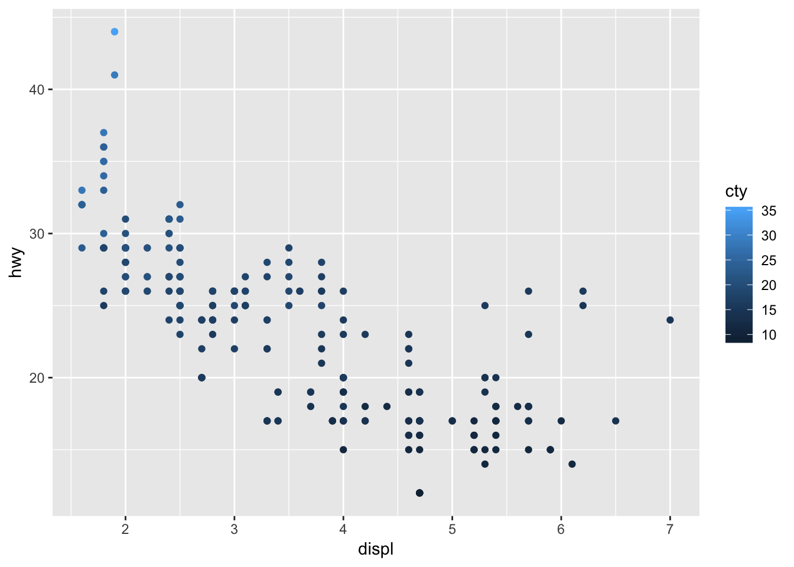
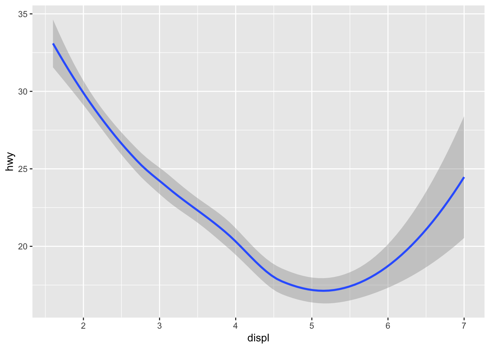
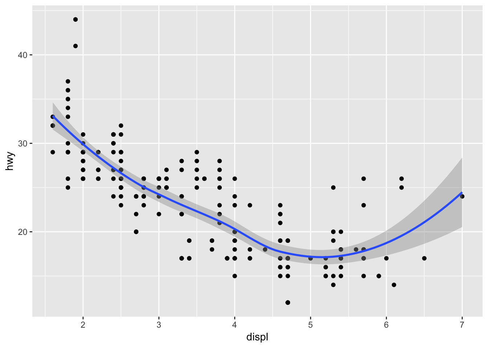
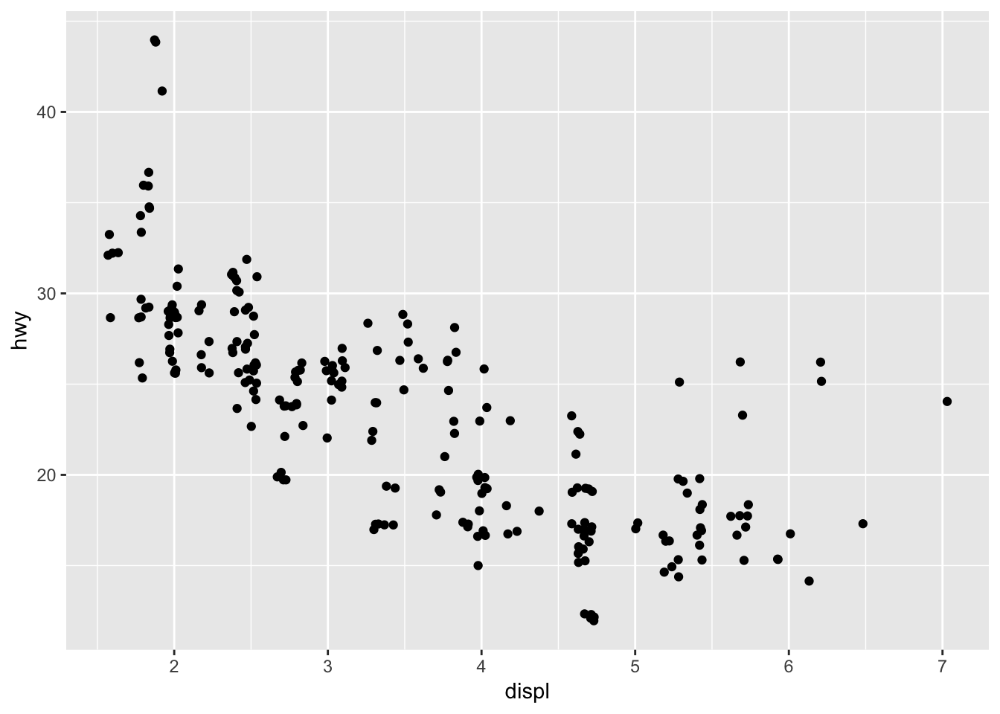
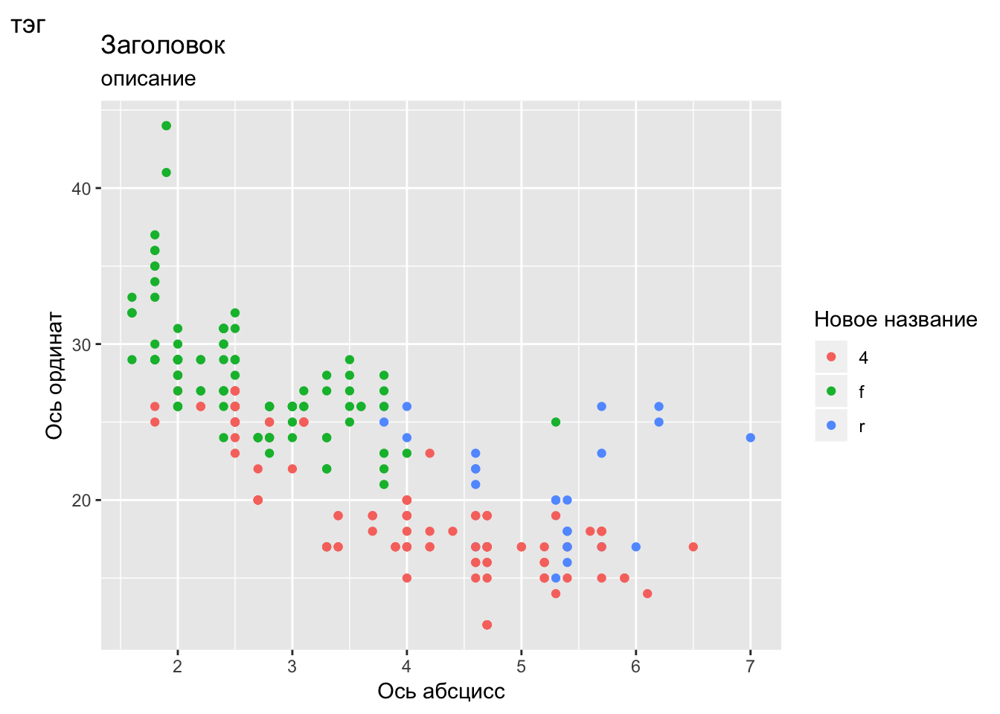
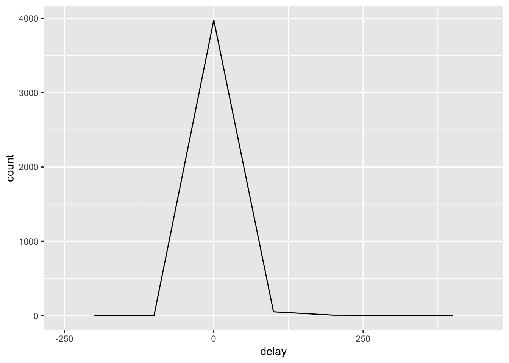
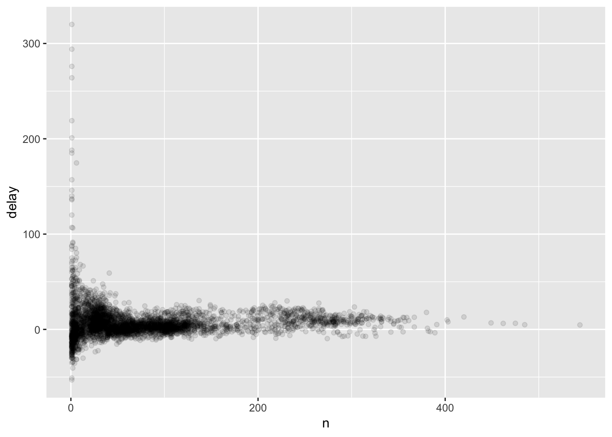
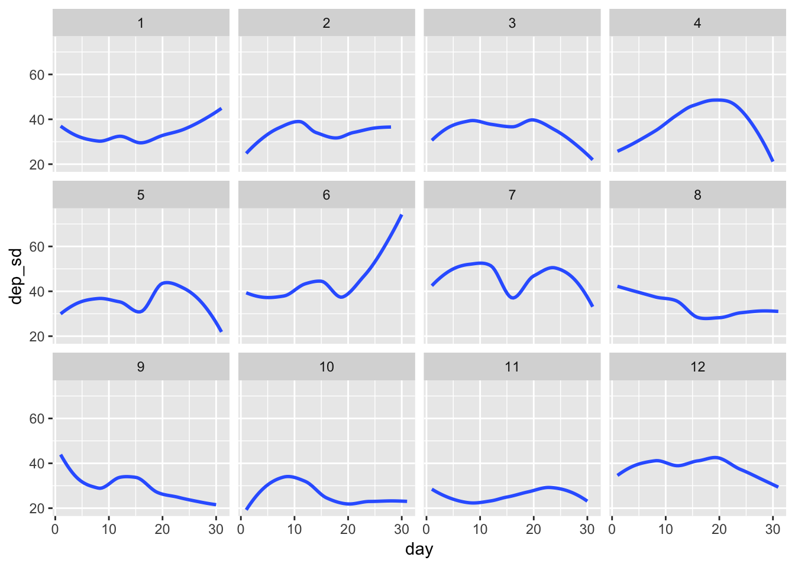

Глава 2 Предварительный анализ
2.1 Визуализация данных с помощью ggplot2
2.1.1 Введение
Электронная версия книги по адресу http://r4ds.had.co.nz.
Для начала работы подключаем библиотеку
library("tidyverse")Дополнительно, используются пакеты install.packages(c("nycflights13", "gapminder", "Lahman"))
А это шпаргалка cheat_sheet
Не было упражнений.
2.1.2 Первые шаги
2.1.2.1 Упражнение 3.2.1
Run ggplot(data = mpg) what do you see?
ggplot(data = mpg)
Пустое окно построения. Функция ggplot() из пакета ggplot2 только содаёт область построения, функциями мы производим наполнение области построения. Больше инфы смотри в подсказке https://github.com/rstudio/cheatsheets/blob/master/data-visualization-2.1.pdf .
2.1.2.2 Упражнение 3.2.2
How many rows are in mpg? How many columns?
Чтобы проверить “строение” фрейма данных mpg,можно воспользоваться двумя способами. Var1:
ggplot2::mpg## # A tibble: 234 x 11
## manufacturer model displ year cyl trans drv cty hwy fl cla…
## <chr> <chr> <dbl> <int> <int> <chr> <chr> <int> <int> <chr> <ch>
## 1 audi a4 1.8 1999 4 auto… f 18 29 p com…
## 2 audi a4 1.8 1999 4 manu… f 21 29 p com…
## 3 audi a4 2 2008 4 manu… f 20 31 p com…
## 4 audi a4 2 2008 4 auto… f 21 30 p com…
## 5 audi a4 2.8 1999 6 auto… f 16 26 p com…
## 6 audi a4 2.8 1999 6 manu… f 18 26 p com…
## 7 audi a4 3.1 2008 6 auto… f 18 27 p com…
## 8 audi a4 q… 1.8 1999 4 manu… 4 18 26 p com…
## 9 audi a4 q… 1.8 1999 4 auto… 4 16 25 p com…
## 10 audi a4 q… 2 2008 4 manu… 4 20 28 p com…
## # ... with 224 more rowsгде видно что mpg это матрица 234 строки на 11 столбцов.
Var2:
glimpse(mpg)## Observations: 234
## Variables: 11
## $ manufacturer <chr> "audi", "audi", "audi", "audi", "audi", "audi", "...
## $ model <chr> "a4", "a4", "a4", "a4", "a4", "a4", "a4", "a4 qua...
## $ displ <dbl> 1.8, 1.8, 2.0, 2.0, 2.8, 2.8, 3.1, 1.8, 1.8, 2.0,...
## $ year <int> 1999, 1999, 2008, 2008, 1999, 1999, 2008, 1999, 1...
## $ cyl <int> 4, 4, 4, 4, 6, 6, 6, 4, 4, 4, 4, 6, 6, 6, 6, 6, 6...
## $ trans <chr> "auto(l5)", "manual(m5)", "manual(m6)", "auto(av)...
## $ drv <chr> "f", "f", "f", "f", "f", "f", "f", "4", "4", "4",...
## $ cty <int> 18, 21, 20, 21, 16, 18, 18, 18, 16, 20, 19, 15, 1...
## $ hwy <int> 29, 29, 31, 30, 26, 26, 27, 26, 25, 28, 27, 25, 2...
## $ fl <chr> "p", "p", "p", "p", "p", "p", "p", "p", "p", "p",...
## $ class <chr> "compact", "compact", "compact", "compact", "comp...Сразу тут покажу, что каждый параметр означает:
| Название | Описание |
|---|---|
| manufacturer | изготовитель |
| model | модель |
| displ | объём двигателя в литрах |
| year | год изготовления |
| cyl | количество цилиндров |
| trans | тип трансмиссии |
| drv | тип привода |
| cty | количество пройденных миль по городу на один галлон топлива |
| hwy | количество пройденных миль за городом на один галлон топлива |
| fl | тип топлива |
| class | класс автомобиля |
2.1.2.3 Упражнение 3.2.3
What does the drv variable describe? Read the help for ?mpg to find out. drv — это имя одного из параметров, оно обозначает тип привода автомобиля.
| Краткое название | Тип привода |
|---|---|
| f | передний |
| r | задний |
| 4 | полный |
2.1.2.4 Упражнение 3.2.4
Make a scatter plot of hwy vs cyl.
можно прописывать на одной координатной плоскости разные геометрические функции с индивидуальными параметрами, тогда правильнее будет писать вот так
Var 1
ggplot(data = mpg)+
geom_point(mapping = aes(x = hwy, y = cyl))
Но если параметры одни и те же, а требуется построить разные геометрии, то лучше прописать общие параметры вынося их “за скобки” Var 2
ggplot(data = mpg, aes(x = hwy, y = cyl))+
geom_point()
2.1.2.5 Упражнение 3.2.5
What happens if you make a scatterplot of class vs drv? Why is the plot not useful?
Оба параметра являются категориальными, или описательными. Можно построить <chr> от <chr>.
ggplot(data = mpg) + geom_point(mapping = aes(x = class, y = drv))Но с точки зрения аналитики, такая информация не несёт большой пользы. В конкретном примере можно только сказать что, все автомобили класса 2seater имеют задний привод. А в классе subcompact есть все типы привода.
2.1.3 Эстетика визуализации
2.1.3.1 Упражнения 3.3.1
What’s gone wrong with this code? Why are the points not blue?
ggplot(data = mpg) +
geom_point(mapping = aes(x = displ, y = hwy, colour = "blue"))
Всё потому что colour не вынес за скобки, потому что colour это параметр функции geom_point(), not aes() правильно вот так
ggplot(data = mpg) +
geom_point(mapping = aes(x = displ, y = hwy), colour = "blue")
2.1.3.2 Упражнения 3.3.2
Which variables in mpg are categorical? Which variables are continuous? (Hint: type ?mpg to read the documentation for the dataset). How can you see this information when you run mpg?
Это те факторы, которые позволяют разделить на показатели. Чтобы понять какие факторы являются категориальными можно воспользоваться функцией glimpse(), которая показывает тип каждого столбца. Соответственно, те что <chr> и есть категориальные:
glimpse(mpg)## Observations: 234
## Variables: 11
## $ manufacturer <chr> "audi", "audi", "audi", "audi", "audi", "audi", "...
## $ model <chr> "a4", "a4", "a4", "a4", "a4", "a4", "a4", "a4 qua...
## $ displ <dbl> 1.8, 1.8, 2.0, 2.0, 2.8, 2.8, 3.1, 1.8, 1.8, 2.0,...
## $ year <int> 1999, 1999, 2008, 2008, 1999, 1999, 2008, 1999, 1...
## $ cyl <int> 4, 4, 4, 4, 6, 6, 6, 4, 4, 4, 4, 6, 6, 6, 6, 6, 6...
## $ trans <chr> "auto(l5)", "manual(m5)", "manual(m6)", "auto(av)...
## $ drv <chr> "f", "f", "f", "f", "f", "f", "f", "4", "4", "4",...
## $ cty <int> 18, 21, 20, 21, 16, 18, 18, 18, 16, 20, 19, 15, 1...
## $ hwy <int> 29, 29, 31, 30, 26, 26, 27, 26, 25, 28, 27, 25, 2...
## $ fl <chr> "p", "p", "p", "p", "p", "p", "p", "p", "p", "p",...
## $ class <chr> "compact", "compact", "compact", "compact", "comp...2.1.3.3 Упражнения 3.3.3
Map a continuous variable to color, size, and shape. How do these aesthetics behave differently for categorical vs. continuous variables?
Непрерывные переменные, это такие переменные которые принимают значения в некотором диапазоне. Непрерывной переменной является например cty, city miles per gallon, и показывает сколько проедет автомобиль в черте горда на один галлон топлива. Если сопоставить этой переменной цвет то получится
ggplot(mpg, aes(x = displ, y = hwy, colour = cty)) +
geom_point()
Цвет распределяется в диапазоне переменной cty, то есть в пределах от примерно 10 до 35. Попробуем теперь соспоставить размер
ggplot(mpg, aes(x = displ, y = hwy, size = cty)) +
geom_point()
В принципе получается такая же картина, только точки выделены не цветом, а размером. И наконец, сопоставим форму непрерывной переменной
#ggplot(mpg, aes(x = displ, y = hwy, shape = cty)) + geom_point()А вот хуюшки. Программа выдаст Ошибка: A continuous variable can not be mapped to shape. Непрерывные переменные не соотносятся с атрибутом shape, так сделано специально. Потому что фигур всего 24, а наборов значений у непрерывной переменной может быть сколь угодно много
2.1.3.4 Упражнения 3.3.4
What happens if you map the same variable to multiple aesthetics?
Связать можно, вот например, переменная drv для цвета и для формы
ggplot(mpg, aes(x = displ, y = hwy, color = drv, shape = drv)) + geom_point()
но это будет избыточное выделение.
2.1.3.5 Упражнения 3.3.5
What does the stroke aesthetic do? What shapes does it work with? (Hint: use ?geom_point)
stroke это размер границы фигуры. Он работает с фигурами, у которых помимо полной заливки есть цвет границы т.е. фигуры 21-24 
Иллюстрирующий пример. Вот построение обычными точками
ggplot(mpg, aes(hwy, cyl))+
geom_point()Теперь зададим красную заливку, и размер границы фигуры \(2\)
ggplot(mpg, aes(hwy, cyl)) +
geom_point(shape=21,colour="black",fill="red",size=3,stroke=2)
Ну а теперь \(5\)
ggplot(mpg, aes(hwy, cyl)) +
geom_point(shape=21,colour="black",fill="red",size=3,stroke=5)
2.1.3.6 Упражнения 3.3.6
What happens if you map an aesthetic to something other than a variable name, like aes(colour = displ < 5)?
Визуальные атрибуты можно задавать и логическими выражениями, как допустим в таком выражении:
ggplot(mpg, aes(displ,hwy, color = displ < 2)) +
geom_point() ggplot(mpg, aes(displ,hwy, color = displ < 4)) +
geom_point()
ggplot(mpg, aes(displ,hwy, size = displ > 3)) +
geom_point()## Warning: Using size for a discrete variable is not advised.К тому же R ругается, что лучше бы такое не делать ### Распространённые ошибки Проблемы случаются и это норм. Если что-то не получается, чекни код.
Часто бывает что поставил + не туда. Он должен быть в конце строки, а не в начале.
2.1.4 Панели
2.1.4.1 Упражнение 3.5.1
What happens if you facet on a continuous variable?
Как это работает.
Построим график highway miles per gallon от engine displacement, in litres.
ggplot(mpg, aes(x = displ, y = hwy)) +
geom_point()
Теперь разделим на “окошки” т.е. возьмём срез графиков с теми же дискретными переменными, но в разрезе типа привода автомобиля drv от количества цилиндров cyl.
ggplot(mpg, aes(x = displ, y = hwy)) +
geom_point() +
facet_grid(drv~ cyl) Получилось \(12\) панелей, потому что
Получилось \(12\) панелей, потому что drv дискретная, ограниченная переменная, у неё всего три набора значения (\(4, f, d\)). Количество цилиндров cyl тоже ограниченная \(4,5,6,8\). Поэтому получилось \(3*4=12\) значений. Так как панелей получилось немного, такое представление осязаемо, с ним можно работать, оно информативно.
Если мы попробуем построить в одном измерении непрерывную переменную. То количество панелей возрастёт на количество значений этой переменной. Получится не очень информативно. Заменим в этом же построении количество цилиндров cyl на расстояние, пройденное за один галлон топлива в городской черте cty. Это непрерывная переменная, у которой много значений.
ggplot(mpg, aes(x = displ, y = hwy)) +
geom_point() +
facet_grid(drv~cty)Вот что произойдет, если параметром для панели задать непрерывную переменную. Будет много окошек, информативность представленной информации падает.
2.1.4.2 Упражнение 3.5.2
What do the empty cells in plot with facet_grid(drv ~ cyl) mean? How do they relate to this plot?
Построим панели по заданному условию
ggplot(mpg, aes(x = displ, y = hwy)) +
geom_point() +
facet_grid(drv~cyl)Пустые ячейки
- \(cyl(5):drv(4)\);
- \(cyl(4):drv(r)\);
- \(cyl(5):drv(r)\);
говорят о том, что нет точек удовлетворяющих этим разрезам данных. Иначе говоря, в наборе данных mpg
- нет полноприводных авто с 5 цилиндрами
- заднеприводных авто с 4 цилиндрами
- заднеприводных авто с 5 цилиндрами
Построим заданную функцию
ggplot(data = mpg) +
geom_point(mapping = aes(x = drv, y = cyl))
Она соотносится с построенными выше панелями в том, что показывает отсутствие данных в комбинациях переменных drv:cyl
2.1.4.3 Упражнение 3.5.3
What plots does the following code make? What does «.» do?
ggplot(data = mpg) +
geom_point(mapping = aes(x = displ, y = hwy)) +
facet_grid(drv ~ .)
ggplot(data = mpg) +
geom_point(mapping = aes(x = displ, y = hwy)) +
facet_grid(. ~ cyl)Сравним с оригиналом:
ggplot(data = mpg) +
geom_point(mapping = aes(x = displ, y = hwy)) +
facet_grid(drv ~ cyl)
Как видно на самих построениях, точка убирает одно из измерений панели следующим образом:
Если точка стоит в первой координате, (. ~ param), то убираются строки Если точка стоит во второй координате, (param ~ .), то убираются столбцы
2.1.4.4 Упражнение 3.5.4
Take the first faceted plot in this section:
ggplot(data = mpg) +
geom_point(mapping = aes(x = displ, y = hwy)) +
facet_wrap(~ class, nrow = 2)
What are the advantages to using faceting instead of the colour aesthetic? What are the disadvantages? How might the balance change if you had a larger dataset?
Для того чтобы сравнить это цветное выделение с выделением плитками. Посмотрим как выглядит выделение того же построения данных цветом:
ggplot(data = mpg) +
geom_point(mapping = aes(x = displ, y = hwy, color = class))Преимущество построения плитками заключается в том, что каждая группы “очищена” от мусора других групп. Плитками проще оценить распределение точек в отдельно взятой группе. Кроме этого если выделять цветом построения с большим количеством групп, то необходимо более ответственно подходить к подбору цветов `– нужно делать их более контрастными. Потому что при увеличении количества групп, цвета начинают сливаться, и уже трудно различать к какой категории относится точка.
Недостаток построяния плитками заключается в том, что каждая группа строится в отдельной системе координат. Трудно сравнивать распределение точек между группами.
2.1.4.5 Упражнение 3.5.5
Read ?facet_wrap. What does nrow do? What does ncol do? What other options control the layout of the individual panels? Why doesn’t facet_grid() have nrow and ncol arguments?
| аргумент | что значит |
|---|---|
nrow |
количество строк |
ncol |
количество столбцов |
Эти переменные нужны, так как срез графика в facet_wrap() происходит по одной дискретной переменной. В свою очередь facet_grid использует комбинации двех переменных поэтому для построения не нужно выбирать количество строк или колонок.
2.1.4.6 Упражнение 3.5.6
When using facet_grid() you should usually put the variable with more unique levels in the columns. Why?
Экраны наших компьютеров, книги, чертежи, имеют альбомную ориентацию и на одном носители умещается больше данных. Поэтому визуально проще сравнивать большее количество переменных по-горизонтали.
2.1.5 Геометрические объекты
2.1.5.1 Упражнения 3.6.1
What geom would you use to draw a line chart? A boxplot? A histogram? An area chart?
На русский язык “boxplot перевели как”полосчатый график“. Это конечно сбивает с толку, потому что boxplot это конечно”ящик с усами“. Исходя из этого
| Название графика | Объект geom |
|---|---|
| linechart | geom_line |
| boxplot | geom_boxplot |
| histogram | geom_histogram |
| area chart | geom_area |
2.1.5.2 Упражнения 3.6.2
Run this code in your head and predict what the output will look like. Then, run the code in R and check your predictions.
Это будет распределение displ от hwy. С цветом точек в зависимости от drv, т.е. три цвета - зелёный, красный и голубой. В этой же системе координат будет построена линия среднеквадратичного приближения без доверительного интервала с тем же цветом, что и точки.
ggplot(data = mpg, mapping = aes(x = displ, y = hwy, colour = drv)) +
geom_point() +
geom_smooth(se = FALSE)## `geom_smooth()` using method = 'loess' and formula 'y ~ x'
Поправочка - будет три линии приближений с цветом, соответсвующим цвету точек, по которым строится это приближение
2.1.5.3 Упражнения 3.6.3
What does show.legend = FALSE do? What happens if you remove it? Why do you think I used it earlier in the chapter?
Автор имеет в виду этот пример
ggplot(mpg) +
geom_smooth(
mapping = aes(displ, hwy, colour = drv),
show.legend = FALSE
)## `geom_smooth()` using method = 'loess' and formula 'y ~ x'Инструкция show.legend распоряжает показывать легенду графика или нет. По умолчанию эта инструкция имеет значение TRUE. В примере из книги, инструкция show.legend = FALSE использовалась намеренно, чтобы в максимальном размере уместить в одну строку три графика. Тот же график с легендой выглядит вот так:
ggplot(mpg) +
geom_smooth(
mapping = aes(displ, hwy, colour = drv)
)## `geom_smooth()` using method = 'loess' and formula 'y ~ x'2.1.5.4 Упражнения 3.6.4
What does the se argument to geom_smooth() do?
Аргумент se распоряжает показывать ли доверительный интервал или нет. По умолчанию этот интервал показывается. В примере ниже доверительный интервал показывается:
ggplot(mpg) +
geom_smooth(mapping = aes(displ, hwy))## `geom_smooth()` using method = 'loess' and formula 'y ~ x'
Теперь уберём его:
ggplot(mpg) +
geom_smooth(mapping = aes(displ, hwy), se = FALSE)## `geom_smooth()` using method = 'loess' and formula 'y ~ x'2.1.5.5 Упражнения 3.6.5
Will these two graphs look different? Why/why not?
ggplot(data = mpg, mapping = aes(x = displ, y = hwy)) +
geom_point() +
geom_smooth()ggplot() +
geom_point(data = mpg, mapping = aes(x = displ, y = hwy)) +
geom_smooth(data = mpg, mapping = aes(x = displ, y = hwy))Эти графики будут идентичными, потому что в первом случае в функции ggplot() задаются исходные условия сразу для всех функций, которые будут строится на этом поле построения. А во втором случае, все исходные условия для построений указаны в каждой функции индивидуально. И так как различий в этих условиях нет, то выглядеть они будут одинаково:
ggplot(data = mpg, mapping = aes(x = displ, y = hwy)) +
geom_point() +
geom_smooth()## `geom_smooth()` using method = 'loess' and formula 'y ~ x'
ggplot() +
geom_point(data = mpg, mapping = aes(x = displ, y = hwy)) +
geom_smooth(data = mpg, mapping = aes(x = displ, y = hwy))## `geom_smooth()` using method = 'loess' and formula 'y ~ x'
2.1.5.6 Упражнения 3.6.6
Recreate the R code necessary to generate the following graphs. 
- В левом верхнем графике наложено два построения. Первое
geom_point()- обычное построение без какой либо группировки и цветового выделения. Второеgeom_smouth()- построение распределения без группировки и цветового выделения, без построения доверительного интервала. Так как у обоих построений одинаковые исходные условия, их можно “вынести за скобки”, то есть указать в “родительском”ggplot():
ggplot(mpg, mapping = aes(displ, hwy)) +
geom_point() +
geom_smooth(se = FALSE)## `geom_smooth()` using method = 'loess' and formula 'y ~ x'
- В правом верхнем графике наложено два построения. Первое
geom_point()- обычное построение без какой либо группировки и цветового выделения. Второеgeom_smouth()- построение распределения с группировкой по признакуdrv, без построения доверительного интервала. Так как у двух постройний разные условия, лучше для каждого прописать исходные данные индивидуально
ggplot(mpg) +
geom_point(mapping = aes(displ, hwy)) +
geom_smooth(mapping = aes(displ, hwy, group = drv), se = FALSE)## `geom_smooth()` using method = 'loess' and formula 'y ~ x'- В левом среднем графике наложено два построения. Первое
geom_point()- с цветовой группировкой по признакуdrv. Второеgeom_smouth()- построение распределения с цветовой группировкой по признакуdrv, без построения доверительного интервала. Так как у обоих построений одинаковые исходные условия, их можно “вынести за скобки”, то есть указать в “родительском”ggplot():
ggplot(mpg, mapping = aes(displ, hwy, colour = drv)) +
geom_point() +
geom_smooth(se = FALSE)## `geom_smooth()` using method = 'loess' and formula 'y ~ x'
- В правом среднем графике наложено два построения. Первое
geom_point()- с цветовой группировкой по признакуdrv. Второеgeom_smouth()- построение распределения без группировки и цветового выделения, без построения доверительного интервала. Так как у двух постройний разные условия, лучше для каждого прописать исходные данные индивидуально:
ggplot(mpg) +
geom_point(mapping = aes(displ, hwy, colour = drv)) +
geom_smooth(mapping = aes(displ, hwy), se = FALSE)## `geom_smooth()` using method = 'loess' and formula 'y ~ x'- В левом нижнем графике наложено два построения. Первое
geom_point()- с цветовой группировкой по признакуdrv. Второеgeom_smouth()- построение распределения с группировкой по признакуdrv, с выделением каждой кривой группы разным типом линии, без построения доверительного интервала. Так как у двух постройний разные условия, лучше для каждого прописать исходные данные индивидуально:
ggplot(mpg) +
geom_point(mapping = aes(displ, hwy, colour = drv)) +
geom_smooth(mapping = aes(displ, hwy, linetype = drv), se = FALSE)## `geom_smooth()` using method = 'loess' and formula 'y ~ x'
- В правом нижнем графике только одно построение
geom_point()- с цветовой группировкой по признакуdrvи толстыми белыми границами у точек.
ggplot(mpg, mapping = aes(displ, hwy, fill = drv)) +
geom_point(shape = 21, colour = "white", size = 4, stroke = 4)2.1.6 Статистические преобразования
2.1.6.1 Упражнения 3.7.1
What is the default geom associated with stat_summary()? How could you rewrite the previous plot to use that geom function instead of the stat function?
Для того чтобы ответить на этот вопрос, необходимо открыть help - ?stat_summary
stat_summary(mapping = NULL, data = NULL, geom = "pointrange", position = "identity", ..., fun.data = NULL, fun.y = NULL, fun.ymax = NULL, fun.ymin = NULL, fun.args = list(), na.rm = FALSE, show.legend = NA, inherit.aes = TRUE)
Это и есть ответ - со статистикой stat_summary() связана геометрия geom = "pointrange".
Теперь ответим на вопрос, как можно переписать код
ggplot(data = diamonds) +
stat_summary(
mapping = aes(x = cut, y = depth),
fun.ymin = min,
fun.ymax = max,
fun.y = median
)
Необходимо заменить stat_summary() на geom_pointrange() и вставить название необходимой статистики:
ggplot(data = diamonds) +
geom_pointrange(
mapping = aes(x = cut, y = depth),
stat = "summary",
fun.ymin = min,
fun.ymax = max,
fun.y = median
)2.1.6.2 Упражнения 3.7.2
What does geom_col() do? How is it different to geom_bar()?
Функции имеют разные статистики по умолчанию. geom_bar() иметт stat_count(), а geom_col() имет stat_identity() Т.е. geom_bar() считает, сколько наблюдений попадает в просматриваемый диапазон и столбец показывает количество попавших наблюдений в диапазон. А geom_col() - строит столбцы по количеству наблюдений в диапазоне, а geom_bar() число наблюдений.
2.1.6.3 Упражнения 3.7.3
Most geoms and stats come in pairs that are almost always used in concert. Read through the documentation and make a list of all the pairs. What do they have in common?
Общие элементы у статистик и геометрий это aes(), position, а пары геометрия-статистика следующие:
geom_ |
stat_ |
|---|---|
path |
eclipse, function |
point |
identity, unique |
tile |
summary_2d |
hex |
summary_hex |
pointrange |
summary_bin, summary |
2.1.6.4 Упражнения 3.7.4
What variables does stat_smooth() compute? What parameters control its behavior?
y- predicted value, прогнозируемое значениеymin- lower pointwise confidence interval around the mean, нижний уровень доверительного интервала среднего значенияymax- upper pointwise confidence interval around the mean, верхний уровень доверительного интервала среднего значенияse- standard error, стандтартное отклонение
Я так полагаю, параметры которые регулируют поведение функции, это специальные методы. Если это не так, то я однажды вернусь сюда и дополню этот ответ.
2.1.6.5 Упражнения 3.7.5
In our proportion bar chart, we need to set group = 1 Why? In other words what is the problem with these two graphs?
Graph #1
ggplot(data = diamonds) +
geom_bar(mapping = aes(x = cut, y = ..prop..))Graph #2
ggplot(data = diamonds) +
geom_bar(mapping = aes(x = cut, fill = color, y = ..prop..))Если не указать значение group, то все столбики то есть построения будут иметь prop = 1. Функция geom_bar по умолчанию использует статистику stat_count, которая считает количество значений внутри группы.
ggplot(data = diamonds) +
geom_bar(mapping = aes(x = cut, y = ..prop..))ggplot(data = diamonds) +
geom_bar(mapping = aes(x = cut, fill = color, y = ..prop..))Проблема с этими двумя графиками заключается в том, что пропорции вычисляются внутри групп. Чтобы исправить, нужно указать группы в этих графиках:
ggplot(data = diamonds) +
geom_bar(mapping = aes(x = cut, y = ..prop.., group = 1))ggplot(data = diamonds) +
geom_bar(mapping = aes(x = cut, fill = color, y = ..prop.., group = color))2.1.7 Позиционные настройки
В заданиях часто используется фрейм данных diamonds, укажем его здесь:
| параметр | описание |
|---|---|
price |
цена в долларах ($326–$18,823) |
carat |
вес бриллианта (0.2–5.01) |
cut |
качество огранки (Fair, Good, Very Good, Premium, Ideal) |
color |
цвет бриллианта J (worst) to D (best) |
clarity |
чистота, или прозрачность (I1 (worst), SI2, SI1, VS2, VS1, VVS2, VVS1, IF (best) |
x |
длинна в мм |
y |
ширина в мм |
z |
высота в мм |
depth |
величина total depth percentage = z / mean(x, y) = 2 * z / (x + y) (от 43 до 79) |
table |
ширина верхней части алмаза относительно самой широкой точки (от 43 до 95) |
варианты использования аргумента position:
position = "identity". Строит столбцы с перекрыванием, т.е. в точности, где каждый объект должен находится. Это сложно заметить, поэтому если есть необходимость использовать эту настройку, то чтобы увидеть перекрытие нужно дополнительно указывать параметр прозрачностиalpha:
ggplot(
data = diamonds,
mapping = aes(x = cut, fill = clarity)) +
geom_bar(alpha = 1/5, position = "identity")
или делать объекты незалитыми убирая у атрибута fill цвет:
ggplot(
data = diamonds,
mapping = aes(x = cut, color = clarity)) +
geom_bar(fill = NA, position = "identity")
position = "fill"Создаёт стековые столбцы одинаковой высоты. Удобно сравнивать пропорции у значений.
ggplot(diamonds) +
geom_bar(
mapping = aes(x = cut, fill = clarity),
position = "fill"
)
position = "dodge". Строит перекрывающиеся столбцы рядом друг с другом
ggplot(diamonds) +
geom_bar(
mapping = aes(x = cut, fill = clarity),
position = "dodge"
)position = "jitter". Не подходит для столбчатых диаграмм, но отлично подходит для диаграмм рассеивания. Если точки пересекаются, то чтобы показать истинное распределение значенийjitterдобавляет “шум”
ggplot(mpg) +
geom_point(
mapping = aes(displ, hwy),
position = "jitter"
)
2.1.7.1 Упражнения 3.8.1
What is the problem with this plot? How could you improve it?
ggplot(data = mpg, mapping = aes(x = cty, y = hwy)) +
geom_point()
Это иллюстрация приведённой в книге проблемы наложение графиков. Все значения наносимые на график округляются - поэтому в одной точке может быть наложено несколько значений. Чтобы показать истинное количество точек в одном положении можно воспользоваться функцией geom_jitter, которой добавит случайный шум каждой точке.
ggplot(data = mpg, mapping = aes(x = cty, y = hwy)) +
geom_jitter()2.1.7.2 Упражнения 3.8.2
What parameters to geom_jitter() control the amount of jittering?
Согласно описанию geom_jitter() есть два параметра для управления флуктуациями:
widthдля вертикального распределенияheightдля горизонтального распределения
Разберём на примере. Возьмём диаграмму рассеивания:
ggplot(mpg, aes(cty, hwy)) + geom_point()
Добавим флуктуаций:
ggplot(mpg, aes(cty, hwy)) + geom_jitter()Отрегулируем умеренные флуктуации, установив значение параметров width и height равным \(0,5\)
ggplot(mpg, aes(cty, hwy)) + geom_jitter(width = 0.5, height = 0.5)2.1.7.3 Упражнения 3.8.3
Compare and contrast geom_jitter() with geom_count().
Возьмём данные из предыдущего примера, в которых уже известно, что происходит наложение данных:
ggplot(mpg, aes(cty, hwy)) + geom_point()
ggplot(mpg, aes(cty, hwy)) + geom_jitter()
Теперь посмотрим что делает geom_count()
ggplot(mpg, aes(cty, hwy)) + geom_count()
Функция geom_count() тоже демонстрирует, что точки в построении накладываются. Но она делает это изящнее - в зависимости от количества точек, попавших в одно построение, увеличивается диаметр окружности.
- Преимущество
geom_count()- не изменяются координаты точек. - Недостаток
geom_count()- в зависимости от количества точек, радиус окружности может перекрывать рядом лежащие точки.
Впрочем, в этом случае можно использовать дополнительное выделение цветом:
ggplot(mpg, aes(cty, hwy, color = drv)) + geom_count()
2.1.7.4 Упражнения 3.8.4
What’s the default position adjustment for geom_boxplot()? Create a visualization of the mpg dataset that demonstrates it.
Согласно описанию функции geom_boxplot() значение по умолчанию у параметра position = "dodge2". Оба парамтера "dodge" и "dodge2" строят рядом перекрывающиеся объекты рядом. Разница в том, что "dodge" лепит их вплотную, а "dodge2" добавляет промежуток. Или не совсем…
ggplot(diamonds) +
geom_bar(
mapping = aes(x = cut, fill = clarity),
position = "dodge"
)
ggplot(diamonds) +
geom_bar(
mapping = aes(x = cut, fill = clarity),
position = "dodge2"
)Пример для визуализации.
ggplot(mpg, aes(cty, hwy, color = drv)) + geom_boxplot()Если использовать другое значение для position, то ящики будут накладываться друг на друга:
ggplot(mpg, aes(cty, hwy, color = drv)) + geom_boxplot(position = "identity")2.1.8 Системы координат
2.1.8.1 Упражнения 3.9.1
Turn a stacked bar chart into a pie chart using coord_polar()
Хорошо, сначала построим стековую диаграмму:
ggplot(mpg, aes(x = factor(1), fill = factor(cyl))) +
geom_bar()РАЗОБРАТЬСЯ ЧТО ДЕЛАЕТ factor()
Всё описание работы есть coord_polar() поэтому я ограничусь здесь только выполнением задания. В документации к построению “пирогов” сказано что, нужно относится к этим построениям максимально острожно, что коррелирует с тем, что говорится в дизайне и визуализации
ggplot(mpg, aes(x = factor(1), fill = factor(cyl))) +
geom_bar() + coord_polar(theta = "y")Можно использовать пример из упражнений
ggplot(diamonds) +
geom_bar(
mapping = aes(x = cut, fill = clarity),
position = "fill"
)
ggplot(diamonds) +
geom_bar(
mapping = aes(x = cut, fill = clarity),
position = "fill") +
coord_polar(theta = "y")2.1.8.2 Упражнения 3.9.2
What does labs() do? Read the documentation.
Функция labs() нужна для подписей всего того что отображается на графике. Всё описание есть в хэлпе.
ggplot(mpg) +
geom_point(mapping = aes(displ, hwy, colour = drv)) +
labs(color = "Новое название",
x = "ося порося",
y = "ося лося",
title = "Заголовок",
subtitle = "под-заголовок",
tag = "тэг")
2.1.8.3 Упражнения 3.9.3
What’s the difference between coord_quickmap() and coord_map()?
Coord_map проецирует часть земли, которая к слову является приблизительно сферической, на плоскую 2D-плоскость, используя любую проекцию, определенную пакетом mapproj. Карты, как правило, не сохраняют прямых линий, поэтому это требует значительных вычислений. Coord_quickmap - быстрое приближение, которое сохраняет прямые линии. Он лучше всего подходит для небольших площадей ближе к экватору.
По умолчанию, coord_map() использует проекцию Меркатора. Собственно в хэлпе больше информации с примерами. ggplot
2.1.8.4 Упражнения 3.9.4
What does the plot below tell you about the relationship between city and highway mpg? Why is coord_fixed() important? What does geom_abline() do?
ggplot(data = mpg, mapping = aes(x = cty, y = hwy)) +
geom_point() +
geom_abline() +
coord_fixed()Функция coord_fixed() представляет количество единиц по оси Y, эквивалентное одной единице по оси X. Что в свою очередь гарантирует, что линия, созданная geom_abline(), имеет угол \(45^{\circ}\). 45-градусная линия позволяет легко сравнить пробег по шоссе и городу с корпусом, в котором город и шоссе MPG были равны.
ggplot(data = mpg, mapping = aes(x = cty, y = hwy)) +
geom_point() +
geom_abline()2.1.9 Многослойная грамматика графики
Шаблон кода после всего пройденного материала выглядит следующим образом:
ggplot(data = <DATA>) +
<GEOM_FUNCTION>(
mapping = aes(<MAPPINGS>),
stat = <STAT>,
position = <POSITION>
) +
<COORDINATE_FUNCTION> +
<FACET_FUNCTION>2.2 Рабочий процесс: основы
2.2.1 Основы написания кода
Для вывода символа присвоения <- на MacBook, необходимо нажать комбинацию клавиш
2.2.2 Вызов функций
Не было упражнений
2.2.2.1 Упражнение 4.4.1
Why does this code not work?
my_variable <- 10
my_varıableLook carefully! (This may seem like an exercise in pointlessness, but training your brain to notice even the tiniest difference will pay off when programming.)
Код не работает, потому что допущена опечатка при вызове функции. Обратите внимание на i. Пишите без ошибок.
2.2.2.2 Упражнение 4.4.2
library(tidyverse)
ggplot(dota = mpg) +
geom_point(mapping = aes(x = displ, y = hwy))
fliter(mpg, cyl = 8)
filter(diamond, carat > 3)Должно быть так. В названии библиотеки забыли кавычки ""
library("tidyverse")При объявнлении исходных данных допущена ошибка. Вместо data написано dota
ggplot(data = mpg) +
geom_point(mapping = aes(x = displ, y = hwy))В следующем примере пришлось чуть повозиться. Тут одновременно несколько ошибок. Вместо filter() написано fliter(). А при объявлении, нужно было правильно сравнивать вместо = надо ==
filter(mpg, cyl = 8)И в последнем примере при объявлении фрейма данных допущена опечатка. Вместо diamond надо писать diamonds.
filter(diamonds, carat > 3)2.2.2.3 Упражнение 4.4.3
Press Alt + Shift + K. What happens? How can you get to the same place using the menus?
Это открывает меню шорт-катов, чтобы открыть его “вручну” нужно пройти по адресу Tools -> Keyboard Shortcuts Help.
2.3 Преобразование данных с помощью пакета dplyr
Поменять уровень вложенности главы когда разберусь как это делать
2.3.1 Введение
2.3.1.1 Используемые ресурсы
library(nycflights13)
library(tidyverse)
library(dplyr)Некоторые имена функций в разных библиотеках дублируются. Когда в R подключается несколько пакетов, в которых названия функций дублируются, программа выдает сообщение об ошибке
── Conflicts ─────────────────────────────────────────────────────────────────────────────── tidyverse_conflicts() ──
✖ dplyr::filter() masks stats::filter()
✖ dplyr::lag() masks stats::lag()Для того чтобы обратится к необходимой функции, нужно использовать полное имя stats::filter(), stats::lag()
2.3.1.2 Пакет nycflights13
| Переменная | Описание |
|---|---|
int |
целые числа |
dbl |
числа с плавающей точкой |
chr |
символьные векторы или строки |
dttm |
дата + время |
lgl |
булевы векторы |
fctr |
факторы |
date |
даты |
2.3.1.3 Основные сведения о пакете dplyr
Минимум для работы с этим пакетом:
| Функция | Описание |
|---|---|
filter() |
выбор наблюдений по их значениям |
arrange() |
перестановка строк |
select() |
выбор переменных по их именам |
mutate() |
создание новых переменных с использованием существующих |
summarize() |
сведение нескольких значений в одно итоговое |
group_by() |
изменяет область действия функции от всего набора данных до отдельных участков |
Все глаголы подчиняются одному и тому же синтаксису
Первый аргумент \(-\) это фрейм данных
Последующие аргументы описывают действия, которые должны быть выполнены по отношению к фрейму данных.
Результат \(-\) это новый фрейм данных
2.3.2 Фильтрация строк с помощью функции filter()
Функция filter() позволяет что бы вы думали? позволяет фильтровать! Первым аргументом указываем фрейм данных, последующие аргументы, это параметры (столбцы) которые мы желаем отфильтровать через операторы сравнения.
filter(flights, month == 1, day != 1)## # A tibble: 26,162 x 19
## year month day dep_time sched_dep_time dep_delay arr_time
## <int> <int> <int> <int> <int> <dbl> <int>
## 1 2013 1 2 42 2359 43 518
## 2 2013 1 2 126 2250 156 233
## 3 2013 1 2 458 500 -2 703
## 4 2013 1 2 512 515 -3 809
## 5 2013 1 2 535 540 -5 831
## 6 2013 1 2 536 529 7 840
## 7 2013 1 2 539 545 -6 959
## 8 2013 1 2 554 600 -6 845
## 9 2013 1 2 554 600 -6 841
## 10 2013 1 2 554 600 -6 909
## # ... with 26,152 more rows, and 12 more variables: sched_arr_time <int>,
## # arr_delay <dbl>, carrier <chr>, flight <int>, tailnum <chr>,
## # origin <chr>, dest <chr>, air_time <dbl>, distance <dbl>, hour <dbl>,
## # minute <dbl>, time_hour <dttm>Функция filter(), как и многие другие расширения пакета dplyr, не изменяют исходных данных. Желаемый фильтр нужно присвоить в новую переменную
jan1 <- filter(flights, month == 1, day == 1)Если нужно выполнить присвоение и вывод на экран, нужно обнять выражение скобками.
(jan1 <- filter(flights, month == 1, day == 1))## # A tibble: 842 x 19
## year month day dep_time sched_dep_time dep_delay arr_time
## <int> <int> <int> <int> <int> <dbl> <int>
## 1 2013 1 1 517 515 2 830
## 2 2013 1 1 533 529 4 850
## 3 2013 1 1 542 540 2 923
## 4 2013 1 1 544 545 -1 1004
## 5 2013 1 1 554 600 -6 812
## 6 2013 1 1 554 558 -4 740
## 7 2013 1 1 555 600 -5 913
## 8 2013 1 1 557 600 -3 709
## 9 2013 1 1 557 600 -3 838
## 10 2013 1 1 558 600 -2 753
## # ... with 832 more rows, and 12 more variables: sched_arr_time <int>,
## # arr_delay <dbl>, carrier <chr>, flight <int>, tailnum <chr>,
## # origin <chr>, dest <chr>, air_time <dbl>, distance <dbl>, hour <dbl>,
## # minute <dbl>, time_hour <dttm>2.3.2.1 Сравнения
Операторы сравнения стандартные >, >=, <, <=, ==, !=
Компьюьеры используют арифметику конечной точности. Поэтому
sqrt(2) ^ 2 == 1## [1] FALSE2.3.2.2 Логические операторы
Булевы операторы: И - &, ИЛИ - |, НЕ - !, исключающее ИЛИ - xor(). Полный набор булевых операций показан на рисунке.

alt text
Что следует помнить. Добавляя булевы операторы в функцию filter() необходимо помнить, что сравнивать нужно программно, а не так как это звучит лексически. То есть, если мы хотим все авиарейсы отправленные в декабре и ноябре, нужно писать так.
(filter(flights, month == 11 | month == 12))## # A tibble: 55,403 x 19
## year month day dep_time sched_dep_time dep_delay arr_time
## <int> <int> <int> <int> <int> <dbl> <int>
## 1 2013 11 1 5 2359 6 352
## 2 2013 11 1 35 2250 105 123
## 3 2013 11 1 455 500 -5 641
## 4 2013 11 1 539 545 -6 856
## 5 2013 11 1 542 545 -3 831
## 6 2013 11 1 549 600 -11 912
## 7 2013 11 1 550 600 -10 705
## 8 2013 11 1 554 600 -6 659
## 9 2013 11 1 554 600 -6 826
## 10 2013 11 1 554 600 -6 749
## # ... with 55,393 more rows, and 12 more variables: sched_arr_time <int>,
## # arr_delay <dbl>, carrier <chr>, flight <int>, tailnum <chr>,
## # origin <chr>, dest <chr>, air_time <dbl>, distance <dbl>, hour <dbl>,
## # minute <dbl>, time_hour <dttm>Что дословно произносится как “отфильтровать все полёты из набора данных flights, вылетавших в месяце ноябре или в месяце декабре”. Можно следовать лексическому соответствию, но для этого нужно использовать оператор %in%
(filter(flights, month %in% c(11, 12)))## # A tibble: 55,403 x 19
## year month day dep_time sched_dep_time dep_delay arr_time
## <int> <int> <int> <int> <int> <dbl> <int>
## 1 2013 11 1 5 2359 6 352
## 2 2013 11 1 35 2250 105 123
## 3 2013 11 1 455 500 -5 641
## 4 2013 11 1 539 545 -6 856
## 5 2013 11 1 542 545 -3 831
## 6 2013 11 1 549 600 -11 912
## 7 2013 11 1 550 600 -10 705
## 8 2013 11 1 554 600 -6 659
## 9 2013 11 1 554 600 -6 826
## 10 2013 11 1 554 600 -6 749
## # ... with 55,393 more rows, and 12 more variables: sched_arr_time <int>,
## # arr_delay <dbl>, carrier <chr>, flight <int>, tailnum <chr>,
## # origin <chr>, dest <chr>, air_time <dbl>, distance <dbl>, hour <dbl>,
## # minute <dbl>, time_hour <dttm>Закон Моргана:
!(x & y) == !x | !y!(x | y) == !x & !y
Проверь на рисунке выше.
2.3.2.3 Отсутствующие значения
Функция filter() включает в вывод лишь те строки, для которых условие имеет значение TRUE. FALSE и NA исключаются.
Для того чтобы проверить является ли используемое значением отсутствующим можно использовать функцию is.na()
2.3.2.4 Упражнение 5.2.4.1
Найдите все авиарейсы, которые
- а) задержались с прилётом на два и более часа
(arr_delay <- filter(flights, arr_delay >= 120))## # A tibble: 10,200 x 19
## year month day dep_time sched_dep_time dep_delay arr_time
## <int> <int> <int> <int> <int> <dbl> <int>
## 1 2013 1 1 811 630 101 1047
## 2 2013 1 1 848 1835 853 1001
## 3 2013 1 1 957 733 144 1056
## 4 2013 1 1 1114 900 134 1447
## 5 2013 1 1 1505 1310 115 1638
## 6 2013 1 1 1525 1340 105 1831
## 7 2013 1 1 1549 1445 64 1912
## 8 2013 1 1 1558 1359 119 1718
## 9 2013 1 1 1732 1630 62 2028
## 10 2013 1 1 1803 1620 103 2008
## # ... with 10,190 more rows, and 12 more variables: sched_arr_time <int>,
## # arr_delay <dbl>, carrier <chr>, flight <int>, tailnum <chr>,
## # origin <chr>, dest <chr>, air_time <dbl>, distance <dbl>, hour <dbl>,
## # minute <dbl>, time_hour <dttm>- б) вылетали в Хьюстон (аэропорты IAH и HOU)
(hou_flight <- filter(flights, dest == "IAH" | dest == "HOU"))## # A tibble: 9,313 x 19
## year month day dep_time sched_dep_time dep_delay arr_time
## <int> <int> <int> <int> <int> <dbl> <int>
## 1 2013 1 1 517 515 2 830
## 2 2013 1 1 533 529 4 850
## 3 2013 1 1 623 627 -4 933
## 4 2013 1 1 728 732 -4 1041
## 5 2013 1 1 739 739 0 1104
## 6 2013 1 1 908 908 0 1228
## 7 2013 1 1 1028 1026 2 1350
## 8 2013 1 1 1044 1045 -1 1352
## 9 2013 1 1 1114 900 134 1447
## 10 2013 1 1 1205 1200 5 1503
## # ... with 9,303 more rows, and 12 more variables: sched_arr_time <int>,
## # arr_delay <dbl>, carrier <chr>, flight <int>, tailnum <chr>,
## # origin <chr>, dest <chr>, air_time <dbl>, distance <dbl>, hour <dbl>,
## # minute <dbl>, time_hour <dttm>- в) Обслуживались авиакомпаниями United, American or Delta
Для того чтобы узнать аббревиатуры перевозчиков, смотрим airlanes в хэлпе
Получается: United - это UA, American - AA, Delta - DL. Тогда искомые данные это:
(three_carriers <- filter(flights, carrier %in% c("UA", "AA", "DL")))## # A tibble: 139,504 x 19
## year month day dep_time sched_dep_time dep_delay arr_time
## <int> <int> <int> <int> <int> <dbl> <int>
## 1 2013 1 1 517 515 2 830
## 2 2013 1 1 533 529 4 850
## 3 2013 1 1 542 540 2 923
## 4 2013 1 1 554 600 -6 812
## 5 2013 1 1 554 558 -4 740
## 6 2013 1 1 558 600 -2 753
## 7 2013 1 1 558 600 -2 924
## 8 2013 1 1 558 600 -2 923
## 9 2013 1 1 559 600 -1 941
## 10 2013 1 1 559 600 -1 854
## # ... with 139,494 more rows, and 12 more variables: sched_arr_time <int>,
## # arr_delay <dbl>, carrier <chr>, flight <int>, tailnum <chr>,
## # origin <chr>, dest <chr>, air_time <dbl>, distance <dbl>, hour <dbl>,
## # minute <dbl>, time_hour <dttm>- г) Вылетали в летнее время (июль, август, сентябрь). Странное у них летнее время
(sum_flights <- filter(flights, month %in% c(7, 8, 9)))## # A tibble: 86,326 x 19
## year month day dep_time sched_dep_time dep_delay arr_time
## <int> <int> <int> <int> <int> <dbl> <int>
## 1 2013 7 1 1 2029 212 236
## 2 2013 7 1 2 2359 3 344
## 3 2013 7 1 29 2245 104 151
## 4 2013 7 1 43 2130 193 322
## 5 2013 7 1 44 2150 174 300
## 6 2013 7 1 46 2051 235 304
## 7 2013 7 1 48 2001 287 308
## 8 2013 7 1 58 2155 183 335
## 9 2013 7 1 100 2146 194 327
## 10 2013 7 1 100 2245 135 337
## # ... with 86,316 more rows, and 12 more variables: sched_arr_time <int>,
## # arr_delay <dbl>, carrier <chr>, flight <int>, tailnum <chr>,
## # origin <chr>, dest <chr>, air_time <dbl>, distance <dbl>, hour <dbl>,
## # minute <dbl>, time_hour <dttm>- д) Прилетали с опозданием более чем на два часа но не задерживались с вылетом
(dep_arr_delay <- filter(flights, arr_delay > 120, dep_delay <= 0))## # A tibble: 29 x 19
## year month day dep_time sched_dep_time dep_delay arr_time
## <int> <int> <int> <int> <int> <dbl> <int>
## 1 2013 1 27 1419 1420 -1 1754
## 2 2013 10 7 1350 1350 0 1736
## 3 2013 10 7 1357 1359 -2 1858
## 4 2013 10 16 657 700 -3 1258
## 5 2013 11 1 658 700 -2 1329
## 6 2013 3 18 1844 1847 -3 39
## 7 2013 4 17 1635 1640 -5 2049
## 8 2013 4 18 558 600 -2 1149
## 9 2013 4 18 655 700 -5 1213
## 10 2013 5 22 1827 1830 -3 2217
## # ... with 19 more rows, and 12 more variables: sched_arr_time <int>,
## # arr_delay <dbl>, carrier <chr>, flight <int>, tailnum <chr>,
## # origin <chr>, dest <chr>, air_time <dbl>, distance <dbl>, hour <dbl>,
## # minute <dbl>, time_hour <dttm>- е) Вылетали с задержкое не менее чем на час, но наверстывали более 30 минут во время полёта. Если полёт проходит ровно, то задержка отправления равна задержке прибытия.
Или dep_delay - arr_delay == 0. Так как самолёт наверстал в пути, значит разница равна не нулю, она больше 30.
(speedy_flights <- filter(flights, dep_delay >= 60, dep_delay - arr_delay > 30 ))## # A tibble: 1,844 x 19
## year month day dep_time sched_dep_time dep_delay arr_time
## <int> <int> <int> <int> <int> <dbl> <int>
## 1 2013 1 1 2205 1720 285 46
## 2 2013 1 1 2326 2130 116 131
## 3 2013 1 3 1503 1221 162 1803
## 4 2013 1 3 1839 1700 99 2056
## 5 2013 1 3 1850 1745 65 2148
## 6 2013 1 3 1941 1759 102 2246
## 7 2013 1 3 1950 1845 65 2228
## 8 2013 1 3 2015 1915 60 2135
## 9 2013 1 3 2257 2000 177 45
## 10 2013 1 4 1917 1700 137 2135
## # ... with 1,834 more rows, and 12 more variables: sched_arr_time <int>,
## # arr_delay <dbl>, carrier <chr>, flight <int>, tailnum <chr>,
## # origin <chr>, dest <chr>, air_time <dbl>, distance <dbl>, hour <dbl>,
## # minute <dbl>, time_hour <dttm>- ж) Вылетали между полуночью и 6 часами утра включительно
(moon <- filter(flights, dep_time == 2400 | dep_time <= 600))## # A tibble: 9,373 x 19
## year month day dep_time sched_dep_time dep_delay arr_time
## <int> <int> <int> <int> <int> <dbl> <int>
## 1 2013 1 1 517 515 2 830
## 2 2013 1 1 533 529 4 850
## 3 2013 1 1 542 540 2 923
## 4 2013 1 1 544 545 -1 1004
## 5 2013 1 1 554 600 -6 812
## 6 2013 1 1 554 558 -4 740
## 7 2013 1 1 555 600 -5 913
## 8 2013 1 1 557 600 -3 709
## 9 2013 1 1 557 600 -3 838
## 10 2013 1 1 558 600 -2 753
## # ... with 9,363 more rows, and 12 more variables: sched_arr_time <int>,
## # arr_delay <dbl>, carrier <chr>, flight <int>, tailnum <chr>,
## # origin <chr>, dest <chr>, air_time <dbl>, distance <dbl>, hour <dbl>,
## # minute <dbl>, time_hour <dttm>2.3.2.5 Упражнение 5.2.4.2
Another useful dplyr filtering helper is between(). What does it do? Can you use it to simplify the code needed to answer the previous challenges?
Из описания в хэлпе, функция between() это короткая запись для >= left & x <= right. Или если быть точным: between(x, left, right). Конечно её гораздо удобнее использовать. Эту функцию можно применить к упражнению г. Сравним:
(sum_flights <- filter(flights, month %in% c(7, 8, 9)))## # A tibble: 86,326 x 19
## year month day dep_time sched_dep_time dep_delay arr_time
## <int> <int> <int> <int> <int> <dbl> <int>
## 1 2013 7 1 1 2029 212 236
## 2 2013 7 1 2 2359 3 344
## 3 2013 7 1 29 2245 104 151
## 4 2013 7 1 43 2130 193 322
## 5 2013 7 1 44 2150 174 300
## 6 2013 7 1 46 2051 235 304
## 7 2013 7 1 48 2001 287 308
## 8 2013 7 1 58 2155 183 335
## 9 2013 7 1 100 2146 194 327
## 10 2013 7 1 100 2245 135 337
## # ... with 86,316 more rows, and 12 more variables: sched_arr_time <int>,
## # arr_delay <dbl>, carrier <chr>, flight <int>, tailnum <chr>,
## # origin <chr>, dest <chr>, air_time <dbl>, distance <dbl>, hour <dbl>,
## # minute <dbl>, time_hour <dttm>(sum_flights <- filter(flights, between(month, 7, 9)))## # A tibble: 86,326 x 19
## year month day dep_time sched_dep_time dep_delay arr_time
## <int> <int> <int> <int> <int> <dbl> <int>
## 1 2013 7 1 1 2029 212 236
## 2 2013 7 1 2 2359 3 344
## 3 2013 7 1 29 2245 104 151
## 4 2013 7 1 43 2130 193 322
## 5 2013 7 1 44 2150 174 300
## 6 2013 7 1 46 2051 235 304
## 7 2013 7 1 48 2001 287 308
## 8 2013 7 1 58 2155 183 335
## 9 2013 7 1 100 2146 194 327
## 10 2013 7 1 100 2245 135 337
## # ... with 86,316 more rows, and 12 more variables: sched_arr_time <int>,
## # arr_delay <dbl>, carrier <chr>, flight <int>, tailnum <chr>,
## # origin <chr>, dest <chr>, air_time <dbl>, distance <dbl>, hour <dbl>,
## # minute <dbl>, time_hour <dttm>2.3.2.6 Упражнение 5.2.4.3
How many flights have a missing dep_time? What other variables are missing? What might these rows represent?
(filter(flights, is.na(dep_time)))## # A tibble: 8,255 x 19
## year month day dep_time sched_dep_time dep_delay arr_time
## <int> <int> <int> <int> <int> <dbl> <int>
## 1 2013 1 1 NA 1630 NA NA
## 2 2013 1 1 NA 1935 NA NA
## 3 2013 1 1 NA 1500 NA NA
## 4 2013 1 1 NA 600 NA NA
## 5 2013 1 2 NA 1540 NA NA
## 6 2013 1 2 NA 1620 NA NA
## 7 2013 1 2 NA 1355 NA NA
## 8 2013 1 2 NA 1420 NA NA
## 9 2013 1 2 NA 1321 NA NA
## 10 2013 1 2 NA 1545 NA NA
## # ... with 8,245 more rows, and 12 more variables: sched_arr_time <int>,
## # arr_delay <dbl>, carrier <chr>, flight <int>, tailnum <chr>,
## # origin <chr>, dest <chr>, air_time <dbl>, distance <dbl>, hour <dbl>,
## # minute <dbl>, time_hour <dttm>Ответ 8255 рейсов. Так же отсутствуют: dep_delay, arr_time, arr_delay. Вероятно это отменённые рейсы.
2.3.2.7 Упражнение 5.2.4.4
Why is NA ^ 0 not missing? Why is NA | TRUE not missing? Why is FALSE & NA not missing? Can you figure out the general rule? (NA * 0 is a tricky counterexample!)
NA ^ 0 == 1. Всё в точности с математикой, которая говорит, что любое значение в степени 0 == 1 или точнее \(x^0=1\)NA | TRUE. Всё или ПРАВДА всегда правда :
| \(a\) | \(b\) | \(a\lor b\) |
|---|---|---|
| 0 | 0 | 0 |
| 0 | 1 | 1 |
| 1 | 0 | 1 |
| 1 | 1 | 1 |
FALSE & NA. Всё и ЛОЖЬ всегда Ложь.
| \(a\) | \(b\) | \(a\land b\) |
|---|---|---|
| 0 | 0 | 0 |
| 0 | 1 | 0 |
| 1 | 0 | 0 |
| 1 | 1 | 1 |
NA * 0. Причина по которой значение неопределено. Это то что умножение чего угодна на бесконечность, равно бесконечности, или правильнее - неопределённое значение. нечисло
2.3.3 Перестановка строк с помощью функции arange()
Синтаксис у этой функции такой же как у фильтра. arranga() сортирует по убыванию, а не фильтрует список. При этом отсутствующие значения всегда остаются в конце. При этом для сортировки по возрастанию используется функция desc()
2.3.3.1 Упражнение 5.3.1.1
How could you use arrange() to sort all missing values to the start? (Hint: use is.na()).
Берём пример из учебника.
arrange(flights, desc(arr_delay))## # A tibble: 336,776 x 19
## year month day dep_time sched_dep_time dep_delay arr_time
## <int> <int> <int> <int> <int> <dbl> <int>
## 1 2013 1 9 641 900 1301 1242
## 2 2013 6 15 1432 1935 1137 1607
## 3 2013 1 10 1121 1635 1126 1239
## 4 2013 9 20 1139 1845 1014 1457
## 5 2013 7 22 845 1600 1005 1044
## 6 2013 4 10 1100 1900 960 1342
## 7 2013 3 17 2321 810 911 135
## 8 2013 7 22 2257 759 898 121
## 9 2013 12 5 756 1700 896 1058
## 10 2013 5 3 1133 2055 878 1250
## # ... with 336,766 more rows, and 12 more variables: sched_arr_time <int>,
## # arr_delay <dbl>, carrier <chr>, flight <int>, tailnum <chr>,
## # origin <chr>, dest <chr>, air_time <dbl>, distance <dbl>, hour <dbl>,
## # minute <dbl>, time_hour <dttm>Добавляем как подсказывают, функцию is.na()
arrange(flights, desc(is.na(arr_delay)))## # A tibble: 336,776 x 19
## year month day dep_time sched_dep_time dep_delay arr_time
## <int> <int> <int> <int> <int> <dbl> <int>
## 1 2013 1 1 1525 1530 -5 1934
## 2 2013 1 1 1528 1459 29 2002
## 3 2013 1 1 1740 1745 -5 2158
## 4 2013 1 1 1807 1738 29 2251
## 5 2013 1 1 1939 1840 59 29
## 6 2013 1 1 1952 1930 22 2358
## 7 2013 1 1 2016 1930 46 NA
## 8 2013 1 1 NA 1630 NA NA
## 9 2013 1 1 NA 1935 NA NA
## 10 2013 1 1 NA 1500 NA NA
## # ... with 336,766 more rows, and 12 more variables: sched_arr_time <int>,
## # arr_delay <dbl>, carrier <chr>, flight <int>, tailnum <chr>,
## # origin <chr>, dest <chr>, air_time <dbl>, distance <dbl>, hour <dbl>,
## # minute <dbl>, time_hour <dttm>2.3.3.2 Упражнение 5.3.1.2
Sort flights to find the most delayed flights. Find the flights that left earliest.
Чтобы найти рейсы с самыми большими задержками, сортируем по возрастанию соответствующий столбец dep_delay
arrange(flights, desc(dep_delay))## # A tibble: 336,776 x 19
## year month day dep_time sched_dep_time dep_delay arr_time
## <int> <int> <int> <int> <int> <dbl> <int>
## 1 2013 1 9 641 900 1301 1242
## 2 2013 6 15 1432 1935 1137 1607
## 3 2013 1 10 1121 1635 1126 1239
## 4 2013 9 20 1139 1845 1014 1457
## 5 2013 7 22 845 1600 1005 1044
## 6 2013 4 10 1100 1900 960 1342
## 7 2013 3 17 2321 810 911 135
## 8 2013 6 27 959 1900 899 1236
## 9 2013 7 22 2257 759 898 121
## 10 2013 12 5 756 1700 896 1058
## # ... with 336,766 more rows, and 12 more variables: sched_arr_time <int>,
## # arr_delay <dbl>, carrier <chr>, flight <int>, tailnum <chr>,
## # origin <chr>, dest <chr>, air_time <dbl>, distance <dbl>, hour <dbl>,
## # minute <dbl>, time_hour <dttm>Первые десять рейсов задерживались на время от 896 минут до 1301, это почти сутки (21 час) в аэропорте. Уффф.
Чтобы найти рейсы с самым ранним временем вылета, сортируем по убыванию соответствующий столбец dep_time
arrange(flights, dep_time)## # A tibble: 336,776 x 19
## year month day dep_time sched_dep_time dep_delay arr_time
## <int> <int> <int> <int> <int> <dbl> <int>
## 1 2013 1 13 1 2249 72 108
## 2 2013 1 31 1 2100 181 124
## 3 2013 11 13 1 2359 2 442
## 4 2013 12 16 1 2359 2 447
## 5 2013 12 20 1 2359 2 430
## 6 2013 12 26 1 2359 2 437
## 7 2013 12 30 1 2359 2 441
## 8 2013 2 11 1 2100 181 111
## 9 2013 2 24 1 2245 76 121
## 10 2013 3 8 1 2355 6 431
## # ... with 336,766 more rows, and 12 more variables: sched_arr_time <int>,
## # arr_delay <dbl>, carrier <chr>, flight <int>, tailnum <chr>,
## # origin <chr>, dest <chr>, air_time <dbl>, distance <dbl>, hour <dbl>,
## # minute <dbl>, time_hour <dttm>Ожидаемо, это время вылетов в полночь и минутой позднее.
2.3.3.3 Упражнение 5.3.1.3
Sort flights to find the fastest flights.
Чтобы найти самые быстрые полёты, отсортируем все полёты по времени проведённому в воздухе. Это столбец air_time отсортированный по возрастанию.
arrange(flights, air_time)## # A tibble: 336,776 x 19
## year month day dep_time sched_dep_time dep_delay arr_time
## <int> <int> <int> <int> <int> <dbl> <int>
## 1 2013 1 16 1355 1315 40 1442
## 2 2013 4 13 537 527 10 622
## 3 2013 12 6 922 851 31 1021
## 4 2013 2 3 2153 2129 24 2247
## 5 2013 2 5 1303 1315 -12 1342
## 6 2013 2 12 2123 2130 -7 2211
## 7 2013 3 2 1450 1500 -10 1547
## 8 2013 3 8 2026 1935 51 2131
## 9 2013 3 18 1456 1329 87 1533
## 10 2013 3 19 2226 2145 41 2305
## # ... with 336,766 more rows, and 12 more variables: sched_arr_time <int>,
## # arr_delay <dbl>, carrier <chr>, flight <int>, tailnum <chr>,
## # origin <chr>, dest <chr>, air_time <dbl>, distance <dbl>, hour <dbl>,
## # minute <dbl>, time_hour <dttm>2.3.3.4 Упражнение 5.3.1.4
Which flights traveled the longest? Which traveled the shortest?
Сделаем так, сначала отсортируем по расстоянию, а потом по времени проведённому в воздухе
arrange(flights, desc(distance))## # A tibble: 336,776 x 19
## year month day dep_time sched_dep_time dep_delay arr_time
## <int> <int> <int> <int> <int> <dbl> <int>
## 1 2013 1 1 857 900 -3 1516
## 2 2013 1 2 909 900 9 1525
## 3 2013 1 3 914 900 14 1504
## 4 2013 1 4 900 900 0 1516
## 5 2013 1 5 858 900 -2 1519
## 6 2013 1 6 1019 900 79 1558
## 7 2013 1 7 1042 900 102 1620
## 8 2013 1 8 901 900 1 1504
## 9 2013 1 9 641 900 1301 1242
## 10 2013 1 10 859 900 -1 1449
## # ... with 336,766 more rows, and 12 more variables: sched_arr_time <int>,
## # arr_delay <dbl>, carrier <chr>, flight <int>, tailnum <chr>,
## # origin <chr>, dest <chr>, air_time <dbl>, distance <dbl>, hour <dbl>,
## # minute <dbl>, time_hour <dttm>Самые длинные полёты из JFK в HNL. Из Нью-Йорка в Гонолулу - 4983 мили.
arrange(flights, desc(distance))## # A tibble: 336,776 x 19
## year month day dep_time sched_dep_time dep_delay arr_time
## <int> <int> <int> <int> <int> <dbl> <int>
## 1 2013 1 1 857 900 -3 1516
## 2 2013 1 2 909 900 9 1525
## 3 2013 1 3 914 900 14 1504
## 4 2013 1 4 900 900 0 1516
## 5 2013 1 5 858 900 -2 1519
## 6 2013 1 6 1019 900 79 1558
## 7 2013 1 7 1042 900 102 1620
## 8 2013 1 8 901 900 1 1504
## 9 2013 1 9 641 900 1301 1242
## 10 2013 1 10 859 900 -1 1449
## # ... with 336,766 more rows, and 12 more variables: sched_arr_time <int>,
## # arr_delay <dbl>, carrier <chr>, flight <int>, tailnum <chr>,
## # origin <chr>, dest <chr>, air_time <dbl>, distance <dbl>, hour <dbl>,
## # minute <dbl>, time_hour <dttm>arrange(flights, distance)## # A tibble: 336,776 x 19
## year month day dep_time sched_dep_time dep_delay arr_time
## <int> <int> <int> <int> <int> <dbl> <int>
## 1 2013 7 27 NA 106 NA NA
## 2 2013 1 3 2127 2129 -2 2222
## 3 2013 1 4 1240 1200 40 1333
## 4 2013 1 4 1829 1615 134 1937
## 5 2013 1 4 2128 2129 -1 2218
## 6 2013 1 5 1155 1200 -5 1241
## 7 2013 1 6 2125 2129 -4 2224
## 8 2013 1 7 2124 2129 -5 2212
## 9 2013 1 8 2127 2130 -3 2304
## 10 2013 1 9 2126 2129 -3 2217
## # ... with 336,766 more rows, and 12 more variables: sched_arr_time <int>,
## # arr_delay <dbl>, carrier <chr>, flight <int>, tailnum <chr>,
## # origin <chr>, dest <chr>, air_time <dbl>, distance <dbl>, hour <dbl>,
## # minute <dbl>, time_hour <dttm>Самый короткий из EWR в LGA. Перелёт в пределах Нью-Йорка, который по всей видимости не состоялся, так как у него нету времени полёта. Следующий за ним это полёт из Нью-Арка в Филадельфию - 80 миль. Посмотрим ещё и по времени, проведённому в воздухе:
arrange(flights, distance, air_time)## # A tibble: 336,776 x 19
## year month day dep_time sched_dep_time dep_delay arr_time
## <int> <int> <int> <int> <int> <dbl> <int>
## 1 2013 7 27 NA 106 NA NA
## 2 2013 2 3 2153 2129 24 2247
## 3 2013 2 12 2123 2130 -7 2211
## 4 2013 1 6 2125 2129 -4 2224
## 5 2013 1 23 2128 2129 -1 2221
## 6 2013 2 10 2127 2129 -2 2209
## 7 2013 2 1 2128 2129 -1 2216
## 8 2013 3 30 1942 1950 -8 2026
## 9 2013 1 7 2124 2129 -5 2212
## 10 2013 1 14 2128 2129 -1 2215
## # ... with 336,766 more rows, and 12 more variables: sched_arr_time <int>,
## # arr_delay <dbl>, carrier <chr>, flight <int>, tailnum <chr>,
## # origin <chr>, dest <chr>, air_time <dbl>, distance <dbl>, hour <dbl>,
## # minute <dbl>, time_hour <dttm>2.3.4 Выбор столбцов с помощью функции select()
Функция select() помогает отобрать из фрейма данных необходимые столбцы. Синтаксис простой и привычный
- Указать конкретные столбцы можно через запятую
select(flights, year, month, day)## # A tibble: 336,776 x 3
## year month day
## <int> <int> <int>
## 1 2013 1 1
## 2 2013 1 1
## 3 2013 1 1
## 4 2013 1 1
## 5 2013 1 1
## 6 2013 1 1
## 7 2013 1 1
## 8 2013 1 1
## 9 2013 1 1
## 10 2013 1 1
## # ... with 336,766 more rows- Указать столбцы в промежутке
select(flights, year:day)## # A tibble: 336,776 x 3
## year month day
## <int> <int> <int>
## 1 2013 1 1
## 2 2013 1 1
## 3 2013 1 1
## 4 2013 1 1
## 5 2013 1 1
## 6 2013 1 1
## 7 2013 1 1
## 8 2013 1 1
## 9 2013 1 1
## 10 2013 1 1
## # ... with 336,766 more rows- Выбрать всех столбцов за исключением тех, которые находятся между столбцами включая последние
select(flights, -(year:day))## # A tibble: 336,776 x 16
## dep_time sched_dep_time dep_delay arr_time sched_arr_time arr_delay
## <int> <int> <dbl> <int> <int> <dbl>
## 1 517 515 2 830 819 11
## 2 533 529 4 850 830 20
## 3 542 540 2 923 850 33
## 4 544 545 -1 1004 1022 -18
## 5 554 600 -6 812 837 -25
## 6 554 558 -4 740 728 12
## 7 555 600 -5 913 854 19
## 8 557 600 -3 709 723 -14
## 9 557 600 -3 838 846 -8
## 10 558 600 -2 753 745 8
## # ... with 336,766 more rows, and 10 more variables: carrier <chr>,
## # flight <int>, tailnum <chr>, origin <chr>, dest <chr>, air_time <dbl>,
## # distance <dbl>, hour <dbl>, minute <dbl>, time_hour <dttm>start_with("abc")- соответствует именам, начинающимся с последовательности символов “abc”end_with("abc")- соответствует именам, заканчивающимся последовательностью символов “abc”contains("abc")- соответствует именам, содержащим последовательности символов “abc”matches("(.)\\1")- выбирает переменные, соответствующие регулярному выражению.num_range("x", 1:3)- соответствуетx1,x2,x3Переименовать переменные, сохраняя все переменные не указанные в явном виде
rename(flights, tail_num = tailnum)## # A tibble: 336,776 x 19
## year month day dep_time sched_dep_time dep_delay arr_time
## <int> <int> <int> <int> <int> <dbl> <int>
## 1 2013 1 1 517 515 2 830
## 2 2013 1 1 533 529 4 850
## 3 2013 1 1 542 540 2 923
## 4 2013 1 1 544 545 -1 1004
## 5 2013 1 1 554 600 -6 812
## 6 2013 1 1 554 558 -4 740
## 7 2013 1 1 555 600 -5 913
## 8 2013 1 1 557 600 -3 709
## 9 2013 1 1 557 600 -3 838
## 10 2013 1 1 558 600 -2 753
## # ... with 336,766 more rows, and 12 more variables: sched_arr_time <int>,
## # arr_delay <dbl>, carrier <chr>, flight <int>, tail_num <chr>,
## # origin <chr>, dest <chr>, air_time <dbl>, distance <dbl>, hour <dbl>,
## # minute <dbl>, time_hour <dttm>- Переместить в начало переменные.
select(flights, time_hour, air_time, everything())## # A tibble: 336,776 x 19
## time_hour air_time year month day dep_time sched_dep_time
## <dttm> <dbl> <int> <int> <int> <int> <int>
## 1 2013-01-01 05:00:00 227 2013 1 1 517 515
## 2 2013-01-01 05:00:00 227 2013 1 1 533 529
## 3 2013-01-01 05:00:00 160 2013 1 1 542 540
## 4 2013-01-01 05:00:00 183 2013 1 1 544 545
## 5 2013-01-01 06:00:00 116 2013 1 1 554 600
## 6 2013-01-01 05:00:00 150 2013 1 1 554 558
## 7 2013-01-01 06:00:00 158 2013 1 1 555 600
## 8 2013-01-01 06:00:00 53 2013 1 1 557 600
## 9 2013-01-01 06:00:00 140 2013 1 1 557 600
## 10 2013-01-01 06:00:00 138 2013 1 1 558 600
## # ... with 336,766 more rows, and 12 more variables: dep_delay <dbl>,
## # arr_time <int>, sched_arr_time <int>, arr_delay <dbl>, carrier <chr>,
## # flight <int>, tailnum <chr>, origin <chr>, dest <chr>, distance <dbl>,
## # hour <dbl>, minute <dbl>2.3.4.1 Упражнение 5.4.1.1
Brainstorm as many ways as possible to select dep_time, dep_delay, arr_time, and arr_delay from flights.
- Указать конкретные столбцы через запятую
select(flights, dep_time, dep_delay, arr_time, arr_delay)## # A tibble: 336,776 x 4
## dep_time dep_delay arr_time arr_delay
## <int> <dbl> <int> <dbl>
## 1 517 2 830 11
## 2 533 4 850 20
## 3 542 2 923 33
## 4 544 -1 1004 -18
## 5 554 -6 812 -25
## 6 554 -4 740 12
## 7 555 -5 913 19
## 8 557 -3 709 -14
## 9 557 -3 838 -8
## 10 558 -2 753 8
## # ... with 336,766 more rows- Указать столбцы в промежутке и исключить лишние
select(flights, dep_time:arr_delay, -sched_dep_time, -sched_arr_time)## # A tibble: 336,776 x 4
## dep_time dep_delay arr_time arr_delay
## <int> <dbl> <int> <dbl>
## 1 517 2 830 11
## 2 533 4 850 20
## 3 542 2 923 33
## 4 544 -1 1004 -18
## 5 554 -6 812 -25
## 6 554 -4 740 12
## 7 555 -5 913 19
## 8 557 -3 709 -14
## 9 557 -3 838 -8
## 10 558 -2 753 8
## # ... with 336,766 more rows- Изощренный способ. Перенесём в начало нужные столбцы, отбросим лишние в промежутке
new_flights <- select(flights, dep_time, dep_delay, arr_time, arr_delay, everything())
select(new_flights, -(year:time_hour))## # A tibble: 336,776 x 4
## dep_time dep_delay arr_time arr_delay
## <int> <dbl> <int> <dbl>
## 1 517 2 830 11
## 2 533 4 850 20
## 3 542 2 923 33
## 4 544 -1 1004 -18
## 5 554 -6 812 -25
## 6 554 -4 740 12
## 7 555 -5 913 19
## 8 557 -3 709 -14
## 9 557 -3 838 -8
## 10 558 -2 753 8
## # ... with 336,766 more rows- Укажем номера столбцов
select(flights, 4, 5, 6, 9)## # A tibble: 336,776 x 4
## dep_time sched_dep_time dep_delay arr_delay
## <int> <int> <dbl> <dbl>
## 1 517 515 2 11
## 2 533 529 4 20
## 3 542 540 2 33
## 4 544 545 -1 -18
## 5 554 600 -6 -25
## 6 554 558 -4 12
## 7 555 600 -5 19
## 8 557 600 -3 -14
## 9 557 600 -3 -8
## 10 558 600 -2 8
## # ... with 336,766 more rows- Столбцы начинающиеся на
dep_иarr_
select(flights, starts_with("dep_"), starts_with("arr_"))## # A tibble: 336,776 x 4
## dep_time dep_delay arr_time arr_delay
## <int> <dbl> <int> <dbl>
## 1 517 2 830 11
## 2 533 4 850 20
## 3 542 2 923 33
## 4 544 -1 1004 -18
## 5 554 -6 812 -25
## 6 554 -4 740 12
## 7 555 -5 913 19
## 8 557 -3 709 -14
## 9 557 -3 838 -8
## 10 558 -2 753 8
## # ... with 336,766 more rows- Столбцы содержащие и не содержащие
select(flights, contains("_time"), contains("_delay"), -contains("sched"), -contains("air"))## # A tibble: 336,776 x 4
## dep_time arr_time dep_delay arr_delay
## <int> <int> <dbl> <dbl>
## 1 517 830 2 11
## 2 533 850 4 20
## 3 542 923 2 33
## 4 544 1004 -1 -18
## 5 554 812 -6 -25
## 6 554 740 -4 12
## 7 555 913 -5 19
## 8 557 709 -3 -14
## 9 557 838 -3 -8
## 10 558 753 -2 8
## # ... with 336,766 more rows2.3.4.2 Упражнение 5.4.1.2
What happens if you include the name of a variable multiple times in a select() call?
Если одна и та же переменная указана несколько раз, она всё равно отобразится один раз
select(flights, dep_time, dep_time, dep_time)## # A tibble: 336,776 x 1
## dep_time
## <int>
## 1 517
## 2 533
## 3 542
## 4 544
## 5 554
## 6 554
## 7 555
## 8 557
## 9 557
## 10 558
## # ... with 336,766 more rows2.3.4.3 Упражнение 5.4.1.3
What does the one_of() function do? Why might it be helpful in conjunction with this vector?
Функция one_of() берёт переменные в символьном векторе. Это может быть полезно, если как в примере у нас есть символьный вектор значений, которые необходимо взять
vars <- c("year", "month", "day", "dep_delay", "arr_delay")
select(flights, one_of(vars))## # A tibble: 336,776 x 5
## year month day dep_delay arr_delay
## <int> <int> <int> <dbl> <dbl>
## 1 2013 1 1 2 11
## 2 2013 1 1 4 20
## 3 2013 1 1 2 33
## 4 2013 1 1 -1 -18
## 5 2013 1 1 -6 -25
## 6 2013 1 1 -4 12
## 7 2013 1 1 -5 19
## 8 2013 1 1 -3 -14
## 9 2013 1 1 -3 -8
## 10 2013 1 1 -2 8
## # ... with 336,766 more rows2.3.4.4 Упражнение 5.4.1.4
Does the result of running the following code surprise you? How do the select helpers deal with case by default? How can you change that default?
select(flights, contains("TIME"))## # A tibble: 336,776 x 6
## dep_time sched_dep_time arr_time sched_arr_time air_time
## <int> <int> <int> <int> <dbl>
## 1 517 515 830 819 227
## 2 533 529 850 830 227
## 3 542 540 923 850 160
## 4 544 545 1004 1022 183
## 5 554 600 812 837 116
## 6 554 558 740 728 150
## 7 555 600 913 854 158
## 8 557 600 709 723 53
## 9 557 600 838 846 140
## 10 558 600 753 745 138
## # ... with 336,766 more rows, and 1 more variable: time_hour <dttm>Удивительно, что contains() невосприимчив к регистру:
select(flights, contains("time"))## # A tibble: 336,776 x 6
## dep_time sched_dep_time arr_time sched_arr_time air_time
## <int> <int> <int> <int> <dbl>
## 1 517 515 830 819 227
## 2 533 529 850 830 227
## 3 542 540 923 850 160
## 4 544 545 1004 1022 183
## 5 554 600 812 837 116
## 6 554 558 740 728 150
## 7 555 600 913 854 158
## 8 557 600 709 723 53
## 9 557 600 838 846 140
## 10 558 600 753 745 138
## # ... with 336,766 more rows, and 1 more variable: time_hour <dttm>Оказывается, это регшулируется параметром ignore.case который по умолчанию TRUE:
select(flights, contains("TIME", ignore.case = FALSE))## # A tibble: 336,776 x 0Вот список всех функций, согласно хэлпу, невосприимчивых по умолчанию к регистру:
starts_with(match, ignore.case = TRUE, vars = peek_vars())ends_with(match, ignore.case = TRUE, vars = peek_vars())contains(match, ignore.case = TRUE, vars = peek_vars())matches(match, ignore.case = TRUE, vars = peek_vars())
2.3.5 Добавление столбцов с помощью функции mutate()
Функция mutate() позволяет добавлять в конец исходного фрейма данных столбцы.
Сделаем чуть более показательный набор данных:
flights_sml <- select(flights,
year:day,
ends_with("delay"),
distance,
air_time
)Теперь добавим в конец этого набора дополнительные вычисления
mutate(flights_sml,
gain = dep_delay - arr_delay,
speed = distance / air_time * 60
)## # A tibble: 336,776 x 9
## year month day dep_delay arr_delay distance air_time gain speed
## <int> <int> <int> <dbl> <dbl> <dbl> <dbl> <dbl> <dbl>
## 1 2013 1 1 2 11 1400 227 -9 370.
## 2 2013 1 1 4 20 1416 227 -16 374.
## 3 2013 1 1 2 33 1089 160 -31 408.
## 4 2013 1 1 -1 -18 1576 183 17 517.
## 5 2013 1 1 -6 -25 762 116 19 394.
## 6 2013 1 1 -4 12 719 150 -16 288.
## 7 2013 1 1 -5 19 1065 158 -24 404.
## 8 2013 1 1 -3 -14 229 53 11 259.
## 9 2013 1 1 -3 -8 944 140 5 405.
## 10 2013 1 1 -2 8 733 138 -10 319.
## # ... with 336,766 more rowsЧтобы сохранить только вычисления, без указания дополнительных столбцов, используется функция transmute()
transmute(flights,
gain = dep_delay - arr_delay,
hours = air_time / 60,
gain_per_hour = gain / hours
)## # A tibble: 336,776 x 3
## gain hours gain_per_hour
## <dbl> <dbl> <dbl>
## 1 -9 3.78 -2.38
## 2 -16 3.78 -4.23
## 3 -31 2.67 -11.6
## 4 17 3.05 5.57
## 5 19 1.93 9.83
## 6 -16 2.5 -6.4
## 7 -24 2.63 -9.11
## 8 11 0.883 12.5
## 9 5 2.33 2.14
## 10 -10 2.3 -4.35
## # ... with 336,766 more rows2.3.5.1 Полезные функции создания объектов
Арифметические операторы
+,-,*,/,^Модулярная арифметика. Целочисленное деление -
%/%. Взятие остатка -%%. Показательный пример:
transmute(flights,
dep_time,
hour = dep_time %/% 100,
minute = dep_time %% 100
)## # A tibble: 336,776 x 3
## dep_time hour minute
## <int> <dbl> <dbl>
## 1 517 5 17
## 2 533 5 33
## 3 542 5 42
## 4 544 5 44
## 5 554 5 54
## 6 554 5 54
## 7 555 5 55
## 8 557 5 57
## 9 557 5 57
## 10 558 5 58
## # ... with 336,766 more rowsЛогарифмические функции
log(),log2,log10()Смещения. Вперёд -
lag(). Назад -lead()Кумулятивные и скользящие агрегаты.
cumsum(),cummin(),cumprod(),cummax(),cummean()Логические операторы
<,>,>=,<=,!=Ранжирование. Функции ранжирования
row_number(x),ntile(x, n),min_rank(x),dense_rank(x),percent_rank(x),cume_dist(x). В этих функцияхdesc()меняет направление.
2.3.5.2 Упражнение 5.5.2.1
Currently dep_time and sched_dep_time are convenient to look at, but hard to compute with because they’re not really continuous numbers. Convert them to a more convenient representation of number of minutes since midnight.
Заданные параметры dep_time and sched_dep_time записаны в формате HHMM. Чтобы получить из исходных данных последовательный формат, необходимо произвести целочисленное деление на 100, и к результату добавить остаток от деления.
transmute(flights,
dep_time,
sched_dep_time,
dep_time_minute = ((dep_time %/% 100) * 60) + dep_time %% 100,
sched_dep_time_minute = ((sched_dep_time %/% 100) * 60) + sched_dep_time %% 100
)## # A tibble: 336,776 x 4
## dep_time sched_dep_time dep_time_minute sched_dep_time_minute
## <int> <int> <dbl> <dbl>
## 1 517 515 317 315
## 2 533 529 333 329
## 3 542 540 342 340
## 4 544 545 344 345
## 5 554 600 354 360
## 6 554 558 354 358
## 7 555 600 355 360
## 8 557 600 357 360
## 9 557 600 357 360
## 10 558 600 358 360
## # ... with 336,766 more rowsМожно добавить эти значения в исходную выборку:
mutate(flights,
dep_time_minute = ((dep_time %/% 100) * 60) + dep_time %% 100,
sched_dep_time_minute = ((sched_dep_time %/% 100) * 60) + sched_dep_time %% 100
)## # A tibble: 336,776 x 21
## year month day dep_time sched_dep_time dep_delay arr_time
## <int> <int> <int> <int> <int> <dbl> <int>
## 1 2013 1 1 517 515 2 830
## 2 2013 1 1 533 529 4 850
## 3 2013 1 1 542 540 2 923
## 4 2013 1 1 544 545 -1 1004
## 5 2013 1 1 554 600 -6 812
## 6 2013 1 1 554 558 -4 740
## 7 2013 1 1 555 600 -5 913
## 8 2013 1 1 557 600 -3 709
## 9 2013 1 1 557 600 -3 838
## 10 2013 1 1 558 600 -2 753
## # ... with 336,766 more rows, and 14 more variables: sched_arr_time <int>,
## # arr_delay <dbl>, carrier <chr>, flight <int>, tailnum <chr>,
## # origin <chr>, dest <chr>, air_time <dbl>, distance <dbl>, hour <dbl>,
## # minute <dbl>, time_hour <dttm>, dep_time_minute <dbl>,
## # sched_dep_time_minute <dbl>2.3.5.3 Упражнение 5.5.2.2
Compare air_time with arr_time - dep_time. What do you expect to see? What do you see? What do you need to do to fix it?
Значения данных dep_time и arr_time это время отправления и время прибытия соответственно записанные в формате HHMM. air_time - это время полёта, записанное в минутах. Естественно, если мы просто вычтем из времени прибытия время отправления в текущем формате, мы не получим air_time.
Таким образом, моё предположение сводится к следующему - чтобы разность arr_time - dep_time и air_time совпадали, необходимо:
- для начала привести их к общей форме записи в минутах.
transmute(flights,
air_time,
arr_minus_dep = (((arr_time %/% 100) * 60) + arr_time %% 100) - (((dep_time %/% 100) * 60) + dep_time %% 100)
)## # A tibble: 336,776 x 2
## air_time arr_minus_dep
## <dbl> <dbl>
## 1 227 193
## 2 227 197
## 3 160 221
## 4 183 260
## 5 116 138
## 6 150 106
## 7 158 198
## 8 53 72
## 9 140 161
## 10 138 115
## # ... with 336,766 more rowsзатем необходимо учесть прилёт на другой день
и ещё необходимо учитывать разное время часовых поясов отлёта и прибытия, так как время в данных указано локальное
Так как два последних предположения текущим набором данных мне проверить не предвидится возможным, я заглядываю в подсказку
В имеющимся в сети решении заданий от пользователя jrnold я нашёл что, в своём предположении я не учёл особенность сбора данных. Особенность заключается в том, что время отправления и время прибытия считаются от момента когда самолёт оторвал шасси и коснулся земли соответсвенно. В это время не входит время проведённое при посадке и прохождении регистрации, которое учитано в air_time.
2.3.5.4 Упражнение 5.5.2.3
Compare dep_time, sched_dep_time, and dep_delay. How would you expect those three numbers to be related?
Разберёмся в том, что каждый столбец данных представляет.
sched_dep_time- это запланированное время вылета в формате HHMM по местному времениdep_time- это актуальное время вылета в формате HHMM по местному времениdep_delay- это время задержки вылета в минутах. Отрицательное время будет показывать ранний вылет.
То есть по сути dep_delay это разность между актуальным временем вылета и запланированным временем. Чтобы разность dep_time - sched_dep_time соотносилась с dep_delay, формат HHMM необходимо перевести в минуты.
flights_new_dep <- mutate(flights,
dep_delay_ng = dep_time - sched_dep_time,
dep_delay_ok = (((dep_time %/% 100) * 60) + dep_time %% 100) -
(((sched_dep_time %/% 100) * 60) + sched_dep_time %% 100))Однако подобный формат записи приводит к тому, что если вылет фактический и вылет планируемый находятся по разную сторону от полуночи, то разница будет большой либо в отрицательную, либо в положительную сторону. Что конечно же не соответствует фактическому времени задержки. Тут вроде бы dep_delay и полученный в результате приведения к одному формату и разности планируемого и фактического времени dep_delay_ok сходятся. Однако уже даже при обратной сортировке видно, что есть большие различия, связанные, как я уже сказал, с особенностью внесения этих данных:
new_delay <- select(flights_new_dep, dep_delay_ok, dep_delay, dep_delay_ng)
arrange(new_delay, desc(dep_delay))## # A tibble: 336,776 x 3
## dep_delay_ok dep_delay dep_delay_ng
## <dbl> <dbl> <int>
## 1 -139 1301 -259
## 2 -303 1137 -503
## 3 -314 1126 -514
## 4 -426 1014 -706
## 5 -435 1005 -755
## 6 -480 960 -800
## 7 911 911 1511
## 8 -541 899 -941
## 9 898 898 1498
## 10 -544 896 -944
## # ... with 336,766 more rows2.3.5.5 Упражнение 5.5.2.4
Find the 10 most delayed flights using a ranking function. How do you want to handle ties? Carefully read the documentation for min_rank().
Задрежка вылета dep_delay. Найти 10 авиарейсов, можно функцией arrange()
(arrange(flights, desc(dep_delay)))## # A tibble: 336,776 x 19
## year month day dep_time sched_dep_time dep_delay arr_time
## <int> <int> <int> <int> <int> <dbl> <int>
## 1 2013 1 9 641 900 1301 1242
## 2 2013 6 15 1432 1935 1137 1607
## 3 2013 1 10 1121 1635 1126 1239
## 4 2013 9 20 1139 1845 1014 1457
## 5 2013 7 22 845 1600 1005 1044
## 6 2013 4 10 1100 1900 960 1342
## 7 2013 3 17 2321 810 911 135
## 8 2013 6 27 959 1900 899 1236
## 9 2013 7 22 2257 759 898 121
## 10 2013 12 5 756 1700 896 1058
## # ... with 336,766 more rows, and 12 more variables: sched_arr_time <int>,
## # arr_delay <dbl>, carrier <chr>, flight <int>, tailnum <chr>,
## # origin <chr>, dest <chr>, air_time <dbl>, distance <dbl>, hour <dbl>,
## # minute <dbl>, time_hour <dttm>Но так мы возьмём все связанные данные. Чтобы ограничить выдачу, можно использовать функцию min_rank(). Я воспользуюсь этой функцией чтобы взять первые 10 авиарейсов по рангу. Сначала посмотрим что делает min_rank():
(transmute(flights, dep_delay_rank = min_rank(-dep_delay)))## # A tibble: 336,776 x 1
## dep_delay_rank
## <int>
## 1 114150
## 2 103893
## 3 114150
## 4 144947
## 5 258934
## 6 209494
## 7 234113
## 8 185276
## 9 185276
## 10 163760
## # ... with 336,766 more rowsТеперь добавим к имеющемуся набору данных новых столбуц с обратным ранжированным столбцом dep_delay()
(flights_delayed <- mutate(flights, dep_delay_rank = min_rank(-dep_delay)))## # A tibble: 336,776 x 20
## year month day dep_time sched_dep_time dep_delay arr_time
## <int> <int> <int> <int> <int> <dbl> <int>
## 1 2013 1 1 517 515 2 830
## 2 2013 1 1 533 529 4 850
## 3 2013 1 1 542 540 2 923
## 4 2013 1 1 544 545 -1 1004
## 5 2013 1 1 554 600 -6 812
## 6 2013 1 1 554 558 -4 740
## 7 2013 1 1 555 600 -5 913
## 8 2013 1 1 557 600 -3 709
## 9 2013 1 1 557 600 -3 838
## 10 2013 1 1 558 600 -2 753
## # ... with 336,766 more rows, and 13 more variables: sched_arr_time <int>,
## # arr_delay <dbl>, carrier <chr>, flight <int>, tailnum <chr>,
## # origin <chr>, dest <chr>, air_time <dbl>, distance <dbl>, hour <dbl>,
## # minute <dbl>, time_hour <dttm>, dep_delay_rank <int>Затем возьмём первые 10 значений:
(filter(flights_delayed, dep_delay_rank <= 10))## # A tibble: 10 x 20
## year month day dep_time sched_dep_time dep_delay arr_time
## <int> <int> <int> <int> <int> <dbl> <int>
## 1 2013 1 9 641 900 1301 1242
## 2 2013 1 10 1121 1635 1126 1239
## 3 2013 12 5 756 1700 896 1058
## 4 2013 3 17 2321 810 911 135
## 5 2013 4 10 1100 1900 960 1342
## 6 2013 6 15 1432 1935 1137 1607
## 7 2013 6 27 959 1900 899 1236
## 8 2013 7 22 845 1600 1005 1044
## 9 2013 7 22 2257 759 898 121
## 10 2013 9 20 1139 1845 1014 1457
## # ... with 13 more variables: sched_arr_time <int>, arr_delay <dbl>,
## # carrier <chr>, flight <int>, tailnum <chr>, origin <chr>, dest <chr>,
## # air_time <dbl>, distance <dbl>, hour <dbl>, minute <dbl>,
## # time_hour <dttm>, dep_delay_rank <int>2.3.5.6 Упражнение 5.5.2.5
What does 1:3 + 1:10 return? Why?
1:3 + 1:10## Warning in 1:3 + 1:10: длина большего объекта не является произведением
## длины меньшего объекта## [1] 2 4 6 5 7 9 8 10 12 11Это возвращает такой странный результат, потому что при складывании двух векторов разной длинны, происходит “дополнение” длинного вектора, повторением сначала значениями короткого. Проще говоря: c(1 + 1, 2 + 2, 3 + 3, 1 + 4, 2 + 5, 3 + 6, 1 + 7, 2 + 8, 3 + 9, 1 + 10)
2.3.5.7 Упражнение 5.5.2.6
What trigonometric functions does R provide?
В R есть следующие тригонометрические функции.
Простые:
cos(x),sin(x),tan(x)Арки
acos(x),asin(x),atan(x),atan2(y, x)И ещё
cospi(x),sinpi(x),tanpi(x)
2.3.6 Получение групповых итогов с помощью функции summarize()
2.3.6.1 Объединение нескольких операций с помощью канала
Мы хотим исследовать связь между расстоянием distance и средним временем задержки рейса arr_delay для всех пунктов приема и вылета.
Для этого необходимо.
- Группирование рейсов по пунктам назначения
by_dest <- group_by(flights, dest)- Получение сводных данных (суммарных), касающихся расстояний
distance, среднего времени задержкиmean(arr_delay)и количества авиарейсовcount().
delay <- summarise(by_dest,
count = n(),
dist = mean(distance, na.rm = TRUE),
delay = mean(arr_delay, na.rm = TRUE)
)- Фильтрация данных с целью исключения точек данных, создающих информационный шум, и аэропорта Гонолулу
NHL, который распологется на расстоянии, почти вдвое превышающем расстояние до следующего ближайшего аэропорта.
delay <- filter(delay, count > 20, dest != "NHL")
ggplot(data = delay, mapping = aes(x = dist, y = delay)) +
geom_point(aes(size = count), alpha = 1/3) +
geom_smooth(se = FALSE)## `geom_smooth()` using method = 'loess' and formula 'y ~ x'Это решение, но такой код трудно писать, поскольку нужно присваивать каждому промежуточному фрейму данных отдельное имя. Есть такая штука как канал %>%. Канал фактически позволяет говорить “затем”.
Сначала сгруппируй %>% (затем) просуммируй по количеству значений и посчитай среднее в группах по distance и arr_delay %>% (затем) отфильтруй. Получаются все те же самые блоки, только без промежуточных присваиваний имён.
delays <- flights %>%
group_by(dest) %>%
summarise(
count = n(),
dist = mean(distance, na.rm = TRUE),
delay = mean(arr_delay, na.rm = TRUE)
) %>%
filter(count > 20, dest != "NHL")2.3.6.2 Отсутствующие значения
Я предполагал, что параметр na.rm отвечает за нормальное распределение. Но это было неверное предположение. Разберём пример.
Если суммировать число с пропущенным значением (неизвестным), результат будет тоже неизвестным:
1 + NA## [1] NAПараметр na.rm отвечает за пропущенные значения. Точнее за игнорирование пропущенных значений.
flights %>%
group_by(year, month, day) %>%
summarise(mean = mean(dep_delay))## # A tibble: 365 x 4
## # Groups: year, month [?]
## year month day mean
## <int> <int> <int> <dbl>
## 1 2013 1 1 NA
## 2 2013 1 2 NA
## 3 2013 1 3 NA
## 4 2013 1 4 NA
## 5 2013 1 5 NA
## 6 2013 1 6 NA
## 7 2013 1 7 NA
## 8 2013 1 8 NA
## 9 2013 1 9 NA
## 10 2013 1 10 NA
## # ... with 355 more rowsflights %>%
group_by(year, month, day) %>%
summarise(mean = mean(dep_delay, na.rm = TRUE))## # A tibble: 365 x 4
## # Groups: year, month [?]
## year month day mean
## <int> <int> <int> <dbl>
## 1 2013 1 1 11.5
## 2 2013 1 2 13.9
## 3 2013 1 3 11.0
## 4 2013 1 4 8.95
## 5 2013 1 5 5.73
## 6 2013 1 6 7.15
## 7 2013 1 7 5.42
## 8 2013 1 8 2.55
## 9 2013 1 9 2.28
## 10 2013 1 10 2.84
## # ... with 355 more rowsВ последующем будет использоваться этот срез данных, так что здесь же объявим его:
not_canceled <- flights %>%
filter(!is.na(dep_delay), !is.na(arr_delay))
not_canceled %>%
group_by(year, month, day) %>%
summarise(mean = mean(dep_delay))## # A tibble: 365 x 4
## # Groups: year, month [?]
## year month day mean
## <int> <int> <int> <dbl>
## 1 2013 1 1 11.4
## 2 2013 1 2 13.7
## 3 2013 1 3 10.9
## 4 2013 1 4 8.97
## 5 2013 1 5 5.73
## 6 2013 1 6 7.15
## 7 2013 1 7 5.42
## 8 2013 1 8 2.56
## 9 2013 1 9 2.30
## 10 2013 1 10 2.84
## # ... with 355 more rows2.3.6.3 Счетчики
Счётчик наблюдений это n(). Счетчик отсутствующих значений это sum(!is.na(x)). Проведём лабораторную работу.
Предположим что нас интересуют самолёты с наибольшим средним временем задержки.
delays <- not_canceled %>%
group_by(tailnum) %>%
summarise(delay = mean(arr_delay))
ggplot(delays, aes(x = delay)) + geom_freqpoly(binwidth = 10)
Такой график показывает распределение, почти как гистограммы, только вместо столбцов тут линии. Как и в гистограммах, такие графики показывают количество наблюдений, попавших в заданный диапазон. Постройнный график имеет диапазон 10. Поиграемся немного:
Установив значение диапазона 1 - получаем “зашумлённый” график
ggplot(delays, aes(x = delay)) + geom_freqpoly(binwidth = 1)
Устанавливая значение диапазона = 100, получаем график в котором потеряно много ценной информации, график получился переглаженным
ggplot(delays, aes(x = delay)) + geom_freqpoly(binwidth = 100)Соответственно 1000 не даёт понять даже общую тенденцию, потому что крайние точки выборки, находятся далеко от 1000.
ggplot(delays, aes(x = delay)) + geom_freqpoly(binwidth = 1000)
Но вернёмся к нашему распределению с диапазоном в 10 точек. Можно посмотреть под другим углом на эти данные если построить диаграмму рассеяния:
delays <- not_canceled %>% # Присвой значению `delays` данные `not_canceled` ЗАТЕМ
group_by(tailnum) %>% # Сгруппируй эти данные по номерам самолётов ЗАТЕМ
summarise(
delay = mean(arr_delay, na.rm = TRUE), # Посчитаем среднее значение по параметру `arr_delay`, не учитывая пропуски
n = n() # Со счётчиком количества наблюдений
)
ggplot(delays, aes(x = n, y = delay)) + # Построим точечную диаграмму рассеяния количества наблюдений от времени задержки
geom_point(alpha = 1/10) # Точки сделаем прозрачнымиНа этой диаграмме видно, что хвост у основного распределения длинный. Тоесть от основного количества точек в “районе” нуля есть единичные выбросы вплоть до 300 по оси ординат delay. Часто от такого хвоста, то есть выбросов, необходимо будет избавляться. Как советуют в книге, помогает в этом использование пакета ggplot в потоке dplyr.
delays %>% # Возьми данные `delays` ЗАТЕМ
filter(n > 25) %>% # отфильтруй группы, в которых количество наблюдений меньше `25` ЗАТЕМ
ggplot(mapping = aes(x = n, y = delay)) + # Построй точечную диаграмму `n` от `delay`. Точки сделай прозрачными на 1/10.
geom_point(alpha = 1/10)
Рассмотрим связь между средней результативностью отбивающих в бейсболе и количеством их вызовов на удар.
batting <- as_tibble(Lahman::Batting) # Из большого набора данных `Lahman` возьми фрейм данных `Batting`.
batters <- batting %>% # Присвой переменной `batters` значение `batting` ЗАТЕМ
group_by(playerID) %>% # группируй данные по ID игрока ЗАТЕМ
summarise( # посчитай средний коэффициент результативности
ba = sum(H, na.rm = TRUE) / sum (AB, na.rm = TRUE),
ab = sum(AB, na.rm = TRUE) # Определи суммарное количество возможностей выполнить удар `ab`.
)
batters %>% # Возьми данные `batters` ЗАТЕМ
filter(ab > 100) %>% # Возьми данные с количеством возможностей на удар больше 100 ЗАТЕМ
ggplot(mapping = aes(x = ab, y = ba)) + # Построй диаграмму рассеяния возможностей удара от от коэффициента результативности
geom_point() +
geom_smooth(se = FALSE) # А так же сглаженную прямую без построения доверительного интервала## `geom_smooth()` using method = 'gam' and formula 'y ~ s(x, bs = "cs")'Средний коэффициент результативности - суммарное количество ударов, делённое на суммарное количество возможностей сделать удар?.
Этот график показывает положительную зависимость коэффициент результативности от количества ударов.
Тут есть одна закономерная интересность - чем меньше количество наблюдений, тем существеннее влияет единичное наблюдение на среднее значение. Следствием этого утверждения является тот факт, что самые высокие коэффициенты у тех кому просто повезло разочек ударить по мячу и больше не вызываться к отбиванию:
batters %>%
arrange(desc(ba))## # A tibble: 18,915 x 3
## playerID ba ab
## <chr> <dbl> <int>
## 1 abramge01 1 1
## 2 banisje01 1 1
## 3 bartocl01 1 1
## 4 bassdo01 1 1
## 5 berrijo01 1 1
## 6 birasst01 1 2
## 7 bruneju01 1 1
## 8 burnscb01 1 1
## 9 cammaer01 1 1
## 10 campsh01 1 1
## # ... with 18,905 more rows2.3.6.4 Полезные итоговые функции
Меры положения -
mean(x),median(x)Меры изменчивости - среднеквадратичное отклонение
sd(), межквартильный размах -IQR(), медианное абсолютное отклонение -mad()Меры ранжирования - максимум
max(x), минимумmin(x), квантиль 25%quantile(x, 0,25), квантиль 75%quantile(x, 0,75)Порядковые меры - первый
first(x), последнийlast(x), точная позицияnth(x, 2)Счетчики - размер текущей группы
n(), количество значений не являющихся отсутствующимиsum(!is.na(x)), количество уникальных значенийn_distinct(x)Подсчет количества и долей логических значений
sum(x > 10),mean(y == 0)
2.3.6.5 Группирование по нескольким переменным
Когда мы группируем данные по нескольким переменным, каждый сформированный итог уменьшает колтчество уровней группировки на единицу. Это упрощает последовательное свёртывание.
daily <- group_by(flights, year, month, day)
(per_day <- summarize(daily, flights = n()))## # A tibble: 365 x 4
## # Groups: year, month [?]
## year month day flights
## <int> <int> <int> <int>
## 1 2013 1 1 842
## 2 2013 1 2 943
## 3 2013 1 3 914
## 4 2013 1 4 915
## 5 2013 1 5 720
## 6 2013 1 6 832
## 7 2013 1 7 933
## 8 2013 1 8 899
## 9 2013 1 9 902
## 10 2013 1 10 932
## # ... with 355 more rows(per_month <- summarize(per_day, flights = sum(flights)))## # A tibble: 12 x 3
## # Groups: year [?]
## year month flights
## <int> <int> <int>
## 1 2013 1 27004
## 2 2013 2 24951
## 3 2013 3 28834
## 4 2013 4 28330
## 5 2013 5 28796
## 6 2013 6 28243
## 7 2013 7 29425
## 8 2013 8 29327
## 9 2013 9 27574
## 10 2013 10 28889
## 11 2013 11 27268
## 12 2013 12 28135(per_year <- summarise(per_month, flights = sum(flights)))## # A tibble: 1 x 2
## year flights
## <int> <int>
## 1 2013 336776Буду аккуратен когда буду свёртывать например медианы. Сумма групповых сумм равна общей сумме, но медиана групповых медиан не равна общей медиане.
2.3.6.6 Разгруппирование
Тут всё просто - нужно что-то разгруппировать, пользуемся функцией ungroup()
daily %>%
ungroup() %>% # больше не группировать по дате
summarize(flights = n()) # все рейсы## # A tibble: 1 x 1
## flights
## <int>
## 1 3367762.3.6.7 Упражнение 5.6.7.1
Brainstorm at least 5 different ways to assess the typical delay characteristics of a group of flights. Consider the following scenarios:
A flight is 15 minutes early 50% of the time, and 15 minutes late 50% of the time.
A flight is always 10 minutes late.
A flight is 30 minutes early 50% of the time, and 30 minutes late 50% of the time.
99% of the time a flight is on time. 1% of the time it’s 2 hours late.
Which is more important: arrival delay or departure delay?
Разобьём ответ на части.
- Часть 1. Вначале напридумываем как минимум пять типичных характеристик времени задержки для групп авиарейсов:
Мера положения - среднее время задержки вылета самолёта
Мера положения - среднее время задержки прилёта самолёта
Мера изменчивости - среднеквадратичное отклонение времени задержки вылета самолёта
Мера изменчивости - среднеквадратичное отклонение времени задержки прилёта самолёта
Мера ранжирования - максимальное время задержки вылет самолёта
Мера ранжирования - максимальное время задержки прилёта самолёта
Далее будем придумывать способы доступа к придуманным характеристикам. Группировать будем по дню вылета. В зависимости от задачи, группировать можно по разным параметрам - аэропорт прилёта, аэропорт вылета, время в пути, по любому доступному временному срезу, по номеру авиарейса.
Cреднее время задержки вылета самолёта
dep_delay_mean <- flights %>% # Присвой в dep_delay_mean значения из набора данных flights ЗАТЕМ
group_by(year, month, day) %>% # Сгруппируй по дням прилёта
summarise(dep_mean = mean(dep_delay, na.rm = TRUE)) # В dep_mean посчитай среднее время задержки вылета
ggplot(dep_delay_mean) +
geom_smooth(mapping = aes(day, dep_mean), se = FALSE) + # Построй прямые по дням без стандартного отклонения
facet_wrap(~ month, nrow = 3) # Сгруппируй построения по месяцам в три строки## `geom_smooth()` using method = 'loess' and formula 'y ~ x'
Cреднее время задержки прилёта самолёта
arr_delay_mean <- flights %>%
group_by(year, month, day) %>%
summarise(arr_mean = mean(arr_delay, na.rm = TRUE))
ggplot(arr_delay_mean) +
geom_smooth(mapping = aes(day, arr_mean), se = FALSE) +
facet_wrap(~ month, nrow = 3) ## `geom_smooth()` using method = 'loess' and formula 'y ~ x'Cреднеквадратичное отклонение времени задержки вылета самолёта
arr_delay_sd <- flights %>%
group_by(year, month, day) %>%
summarise(arr_sd = sd(arr_delay, na.rm = TRUE))
ggplot(arr_delay_sd) +
geom_smooth(mapping = aes(day, arr_sd), se = FALSE) +
facet_wrap(~ month, nrow = 3) ## `geom_smooth()` using method = 'loess' and formula 'y ~ x'Cреднеквадратичное отклонение времени задержки прилёта самолёта
dep_delay_sd <- flights %>%
group_by(year, month, day) %>%
summarise(dep_sd = sd(dep_delay, na.rm = TRUE))
ggplot(dep_delay_sd) +
geom_smooth(mapping = aes(day, dep_sd), se = FALSE) +
facet_wrap(~ month, nrow = 3) ## `geom_smooth()` using method = 'loess' and formula 'y ~ x'Максимальное время задержки вылета самолёта
dep_delay_max <- flights %>%
group_by(year, month, day) %>%
summarise(dep_max = max(dep_delay, na.rm = TRUE))
ggplot(dep_delay_max) +
geom_smooth(mapping = aes(day, dep_max), se = FALSE) +
facet_wrap(~ month, nrow = 3)## `geom_smooth()` using method = 'loess' and formula 'y ~ x'
Максимальное время задержки прилета самолёта
arr_delay_max <- flights %>%
group_by(year, month, day) %>%
summarise(arr_max = max(arr_delay, na.rm = TRUE))
ggplot(arr_delay_max) +
geom_smooth(mapping = aes(day, arr_max), se = FALSE) +
facet_wrap(~ month, nrow = 3)## `geom_smooth()` using method = 'loess' and formula 'y ~ x'Часть 2 Рассмотрим предложенные сценарии
Я буду группировать по номеру авиарейса, перевозчику, пункту вылета и пункту назначения. Делаю так, посколько номер авиарейса в данном наборе данных не является уникальным. Под одним номером, в зависимости от перевозчика могут авиарейсы с разными пунктами вылета и назначения Итак, авиарейсы, опережающие график на 15 минут в 50% случаев. Таких рейсов немного:
fast <- not_canceled %>% # присвой в fast фрейм данных not_canceled (это flights без пропусков)
group_by(flight, carrier, origin, dest) %>% # сгруппируй по номеру полёта, аэропорту вылета и аэропорту прилёта
summarise(fast_15min = mean(dep_delay == -15)) # посчитай долю рейсов, которые опережали график на 15 минут
filter(fast, fast_15min == 0.5) # отфильтруй рейсы, у которых задержка 15 минут составляет 50% от всех случаев## # A tibble: 3 x 5
## # Groups: flight, carrier, origin [3]
## flight carrier origin dest fast_15min
## <int> <chr> <chr> <chr> <dbl>
## 1 998 UA EWR MSY 0.5
## 2 1780 US LGA CLT 0.5
## 3 3425 9E LGA GSP 0.5- Поиск авиарейсов, опаздывающих на 15 минут в 50% случаев, отличается только знаком в задержке вылета
slow <- not_canceled %>%
group_by(flight, carrier, origin, dest) %>%
summarise(slow_15min = mean(dep_delay == 15))
filter(slow, slow_15min == 0.5)## # A tibble: 20 x 5
## # Groups: flight, carrier, origin [20]
## flight carrier origin dest slow_15min
## <int> <chr> <chr> <chr> <dbl>
## 1 246 UA EWR RSW 0.5
## 2 339 UA EWR DEN 0.5
## 3 342 UA EWR MIA 0.5
## 4 448 UA EWR LAX 0.5
## 5 562 UA LGA DEN 0.5
## 6 794 WN EWR STL 0.5
## 7 1059 UA LGA DEN 0.5
## 8 1061 UA EWR ORD 0.5
## 9 1483 UA EWR CLE 0.5
## 10 1575 UA EWR PBI 0.5
## 11 1598 UA EWR CLE 0.5
## 12 1622 UA EWR LAX 0.5
## 13 1675 UA EWR IAH 0.5
## 14 1718 UA EWR SFO 0.5
## 15 1939 DL LGA DEN 0.5
## 16 2048 US JFK CLT 0.5
## 17 2315 DL JFK MIA 0.5
## 18 4346 EV EWR CLE 0.5
## 19 4659 EV EWR CLT 0.5
## 20 5560 EV LGA BGR 0.5- Авиарейсы, которые постоянно опаздывают на 10 минут
instant_slow <- not_canceled %>% # Постоянно опаздывающие, означает, что доля вылетов с опозданием
group_by(flight, carrier, origin, dest) %>% # в 10 минут, дл таких рейсов равна 100%
summarise(inst_slow_10min = mean(dep_delay == 10))
filter(instant_slow, inst_slow_10min == 1) ## # A tibble: 27 x 5
## # Groups: flight, carrier, origin [27]
## flight carrier origin dest inst_slow_10min
## <int> <chr> <chr> <chr> <dbl>
## 1 52 WN LGA BNA 1
## 2 107 WN LGA MKE 1
## 3 239 UA EWR DEN 1
## 4 255 US JFK PHL 1
## 5 402 UA EWR PDX 1
## 6 468 UA EWR SFO 1
## 7 544 WN LGA BNA 1
## 8 676 UA EWR DEN 1
## 9 1014 UA LGA DEN 1
## 10 1037 UA EWR MCO 1
## # ... with 17 more rows- Авиарейсы, опережающие график на 30 минут в 50% случаев (таких нету)
fast_30 <- not_canceled %>%
group_by(flight, carrier, origin, dest) %>%
summarise(fast_30min = mean(dep_delay == -30))
filter(fast_30, fast_30min == 0.5)## # A tibble: 0 x 5
## # Groups: flight, carrier, origin [0]
## # ... with 5 variables: flight <int>, carrier <chr>, origin <chr>,
## # dest <chr>, fast_30min <dbl>- Авиарейсы, опаздывающие на 30 минут в 50% случаев
slow_30 <- not_canceled %>%
group_by(flight, carrier, origin, dest) %>%
summarise(slow_30min = mean(dep_delay == 30))
filter(slow_30, slow_30min == 0.5)## # A tibble: 7 x 5
## # Groups: flight, carrier, origin [7]
## flight carrier origin dest slow_30min
## <int> <chr> <chr> <chr> <dbl>
## 1 746 UA EWR ORD 0.5
## 2 1248 UA EWR SAT 0.5
## 3 1250 UA EWR ORD 0.5
## 4 1288 UA EWR SEA 0.5
## 5 1554 UA EWR DEN 0.5
## 6 4287 EV EWR MSP 0.5
## 7 4301 EV EWR RDU 0.5- Авиарейсы, которые в 99% случаев укладывались в график и в 1% случаев опаздывали на 2 часа
interest_flight <- not_canceled %>% # Так как условия два, поэтому и параметра будем вводить два
group_by(flight, carrier, origin, dest) %>% # то и критерия будет два
summarise(interest1 = mean(dep_delay == 120), # Первый для условия в 1% с опозданием на два часа
interest2 = mean(dep_delay == 0)) # Второй для условия в 99% со своевременным вылетом
filter(interest_flight, interest1 == 0,01, interest2 == 0,99) ## # A tibble: 7,895 x 6
## # Groups: flight, carrier, origin [4,546]
## flight carrier origin dest interest1 interest2
## <int> <chr> <chr> <chr> <dbl> <dbl>
## 1 1 UA EWR ORD 0 0
## 2 1 WN LGA MDW 0 0
## 3 2 WN EWR MDW 0 0
## 4 3 B6 JFK FLL 0 0
## 5 3 UA EWR BOS 0 0
## 6 3 UA EWR DEN 0 0
## 7 3 UA EWR TPA 0 0
## 8 7 WN LGA DEN 0 0
## 9 10 UA EWR ORD 0 0
## 10 12 UA EWR LAX 0 0
## # ... with 7,885 more rows- Часть 3 Отвечаю на вопрос о более важном факторе
Для ответа на тот вопрос необходимо определить критерии оценки.
С одной стороны, если говорить о своевременности предоставляемых данных, то задержка прилёта несёт больший урон. Поскольку находясь в воздухе, пассажир не сможет предупредить кого-то о своей задержке (в случае деловой встречи, например) и от пассажира в воздухе ничего не зависит. Получив информацию о том, что рейс задерживает вылет ещё на земле, пассажир может скоординировать свои планы, поменять в конце концов способ перемещения.
2.3.6.8 Упражнение 5.6.7.2
Come up with another approach that will give you the same output as not_canceled %>% count(dest) and not_canceled %>% count(tailnum, wt = distance) (without using count()).
Для вывода количества значений используется счётчки count() входящий в пакет dplyr. Можно обойти и просуммировать другими доступными средствами, например используя функцию sum(!is.na(x), которая считает количество различных уникальных значений.
not_canceled %>% # в наборе данных
group_by(dest) %>% # сгруппируй по направлению вылета
summarise(sum_dest = sum(!is.na(dest))) # создай переменную в которую просуммируй уникальные значения по направлениям## # A tibble: 104 x 2
## dest sum_dest
## <chr> <int>
## 1 ABQ 254
## 2 ACK 264
## 3 ALB 418
## 4 ANC 8
## 5 ATL 16837
## 6 AUS 2411
## 7 AVL 261
## 8 BDL 412
## 9 BGR 358
## 10 BHM 269
## # ... with 94 more rowsили можно посчитать через счётчик n(), что видится более изящным решением, и делает код более читаемым.
not_canceled %>%
group_by(dest) %>%
summarise(sum_dest = n())## # A tibble: 104 x 2
## dest sum_dest
## <chr> <int>
## 1 ABQ 254
## 2 ACK 264
## 3 ALB 418
## 4 ANC 8
## 5 ATL 16837
## 6 AUS 2411
## 7 AVL 261
## 8 BDL 412
## 9 BGR 358
## 10 BHM 269
## # ... with 94 more rowsЧтобы посчитать сумму по всем перемещениям из второго условия, достаточно сделать следующее:
not_canceled %>%
group_by(tailnum) %>%
summarise(sum_dist = sum(distance))## # A tibble: 4,037 x 2
## tailnum sum_dist
## <chr> <dbl>
## 1 D942DN 3418
## 2 N0EGMQ 239143
## 3 N10156 109664
## 4 N102UW 25722
## 5 N103US 24619
## 6 N104UW 24616
## 7 N10575 139903
## 8 N105UW 23618
## 9 N107US 21677
## 10 N108UW 32070
## # ... with 4,027 more rows2.3.6.9 Упражнение 5.6.7.3
Our definition of cancelled flights (is.na(dep_delay) | is.na(arr_delay) ) is slightly suboptimal. Why? Which is the most important column?
Потому что мы берём и те рейсы у которых нет данных о задержки вылета, и те рейсы у которых нет данных о задержки прилёта. Во второе множество могут попасть самолёты, у которых был вылет. Таким образом, фактически такой рейс неправильно называть отменённым. Определяющим столбцом в этом случае будет время в полёте, если нет информации и о времени полёта, то с большей вероятностью этот рейс отменили. В довесок, лучше заменить логическое ИЛИ на логическое И:
filter(flights, is.na(dep_delay) & is.na(arr_delay))## # A tibble: 8,255 x 19
## year month day dep_time sched_dep_time dep_delay arr_time
## <int> <int> <int> <int> <int> <dbl> <int>
## 1 2013 1 1 NA 1630 NA NA
## 2 2013 1 1 NA 1935 NA NA
## 3 2013 1 1 NA 1500 NA NA
## 4 2013 1 1 NA 600 NA NA
## 5 2013 1 2 NA 1540 NA NA
## 6 2013 1 2 NA 1620 NA NA
## 7 2013 1 2 NA 1355 NA NA
## 8 2013 1 2 NA 1420 NA NA
## 9 2013 1 2 NA 1321 NA NA
## 10 2013 1 2 NA 1545 NA NA
## # ... with 8,245 more rows, and 12 more variables: sched_arr_time <int>,
## # arr_delay <dbl>, carrier <chr>, flight <int>, tailnum <chr>,
## # origin <chr>, dest <chr>, air_time <dbl>, distance <dbl>, hour <dbl>,
## # minute <dbl>, time_hour <dttm>ТАким образом, выражение ниже, больше похоже на отменённые рейсы
filter(flights, is.na(dep_delay) & is.na(arr_delay) & is.na(air_time))## # A tibble: 8,255 x 19
## year month day dep_time sched_dep_time dep_delay arr_time
## <int> <int> <int> <int> <int> <dbl> <int>
## 1 2013 1 1 NA 1630 NA NA
## 2 2013 1 1 NA 1935 NA NA
## 3 2013 1 1 NA 1500 NA NA
## 4 2013 1 1 NA 600 NA NA
## 5 2013 1 2 NA 1540 NA NA
## 6 2013 1 2 NA 1620 NA NA
## 7 2013 1 2 NA 1355 NA NA
## 8 2013 1 2 NA 1420 NA NA
## 9 2013 1 2 NA 1321 NA NA
## 10 2013 1 2 NA 1545 NA NA
## # ... with 8,245 more rows, and 12 more variables: sched_arr_time <int>,
## # arr_delay <dbl>, carrier <chr>, flight <int>, tailnum <chr>,
## # origin <chr>, dest <chr>, air_time <dbl>, distance <dbl>, hour <dbl>,
## # minute <dbl>, time_hour <dttm>2.3.6.10 Упражнение 5.6.7.4
Look at the number of cancelled flights per day. Is there a pattern? Is the proportion of cancelled flights related to the average delay?
not_canceled %>%
group_by(year, month, day) %>%
summarise(sum_dist = sum(is.na(dep_time)))## # A tibble: 365 x 4
## # Groups: year, month [?]
## year month day sum_dist
## <int> <int> <int> <int>
## 1 2013 1 1 0
## 2 2013 1 2 0
## 3 2013 1 3 0
## 4 2013 1 4 0
## 5 2013 1 5 0
## 6 2013 1 6 0
## 7 2013 1 7 0
## 8 2013 1 8 0
## 9 2013 1 9 0
## 10 2013 1 10 0
## # ... with 355 more rowsДОДЕЛАТЬ
2.3.6.11 Упражнение 5.6.7.5
Which carrier has the worst delays? Challenge: can you disentangle the effects of bad airports vs. bad carriers? Why/why not? (Hint: think about flights %>% group_by(carrier, dest) %>% summarise(n()))
2.3.6.12 Упражнение 5.6.7.6
Подсчитайте для каждого воздушного судна количество авиарейсов, совершенных до первой задержки более чем на 1 час.
2.3.6.13 Упражнение 5.6.7.7
What does the sort argument to count() do. When might you use it?
2.3.7 Групповое изменение (и фильтрация)
- Найти члены каждой группы имеющие наихудшие показатели
flights_sml <- select(flights,
year:day,
ends_with("delay"),
distance,
air_time)
flights_sml %>%
group_by(year, month, day) %>%
filter(rank(desc(arr_delay)) < 10)## # A tibble: 3,306 x 7
## # Groups: year, month, day [365]
## year month day dep_delay arr_delay distance air_time
## <int> <int> <int> <dbl> <dbl> <dbl> <dbl>
## 1 2013 1 1 853 851 184 41
## 2 2013 1 1 290 338 1134 213
## 3 2013 1 1 260 263 266 46
## 4 2013 1 1 157 174 213 60
## 5 2013 1 1 216 222 708 121
## 6 2013 1 1 255 250 589 115
## 7 2013 1 1 285 246 1085 146
## 8 2013 1 1 192 191 199 44
## 9 2013 1 1 379 456 1092 222
## 10 2013 1 2 224 207 550 94
## # ... with 3,296 more rows- Найти все группы которым соответствует превышение порогового значения
popular_dests <- flights %>%
group_by(dest) %>%
filter(n() > 365)
popular_dests## # A tibble: 332,577 x 19
## # Groups: dest [77]
## year month day dep_time sched_dep_time dep_delay arr_time
## <int> <int> <int> <int> <int> <dbl> <int>
## 1 2013 1 1 517 515 2 830
## 2 2013 1 1 533 529 4 850
## 3 2013 1 1 542 540 2 923
## 4 2013 1 1 544 545 -1 1004
## 5 2013 1 1 554 600 -6 812
## 6 2013 1 1 554 558 -4 740
## 7 2013 1 1 555 600 -5 913
## 8 2013 1 1 557 600 -3 709
## 9 2013 1 1 557 600 -3 838
## 10 2013 1 1 558 600 -2 753
## # ... with 332,567 more rows, and 12 more variables: sched_arr_time <int>,
## # arr_delay <dbl>, carrier <chr>, flight <int>, tailnum <chr>,
## # origin <chr>, dest <chr>, air_time <dbl>, distance <dbl>, hour <dbl>,
## # minute <dbl>, time_hour <dttm>- Стандартизировать для вычисоения метрик групп
popular_dests %>%
filter(arr_delay > 0) %>%
mutate(prop_delay = arr_delay / sum(arr_delay)) %>%
select(year:day, dest, arr_delay, prop_delay)## # A tibble: 131,106 x 6
## # Groups: dest [77]
## year month day dest arr_delay prop_delay
## <int> <int> <int> <chr> <dbl> <dbl>
## 1 2013 1 1 IAH 11 0.000111
## 2 2013 1 1 IAH 20 0.000201
## 3 2013 1 1 MIA 33 0.000235
## 4 2013 1 1 ORD 12 0.0000424
## 5 2013 1 1 FLL 19 0.0000938
## 6 2013 1 1 ORD 8 0.0000283
## 7 2013 1 1 LAX 7 0.0000344
## 8 2013 1 1 DFW 31 0.000282
## 9 2013 1 1 ATL 12 0.0000400
## 10 2013 1 1 DTW 16 0.000116
## # ... with 131,096 more rows